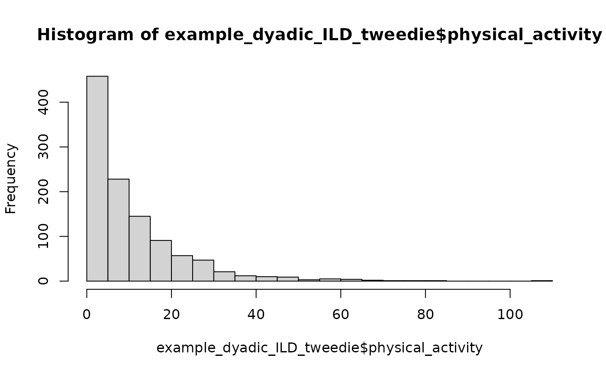
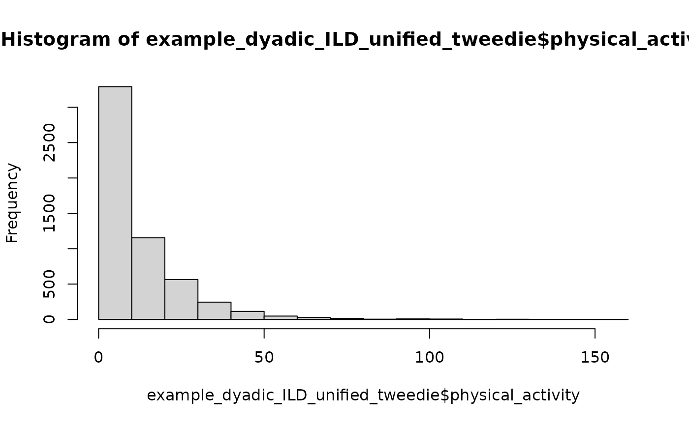

Getting Started
getting-started.Rmd
library(interdep)
has_glmmTMB <- requireNamespace("glmmTMB", quietly = TRUE)interdep helps researchers prepare cross-sectional and
intensive longitudinal dyadic data for statistical models. It supports
common dyadic studies with one kind of dyad, and it also handles studies
where different kinds of dyads appear in the same dataset, such as
female-male, female-female, and male-male couples. Mixed dyad
compositions are supported for composition-aware APIM-style preparation;
current DIM and undirected DSM helpers require one exchangeable dyad
composition.
This vignette focuses mainly on APIM-style actor and partner effects, especially models with multiple dyad types, intensive longitudinal data, and generalized outcomes. For the Dyad-Individual Model (DIM) parameterization, including dyad-mean and within-dyad-deviation predictors and their equivalence to APIM effects in exchangeable dyads, see the Dyad-Individual Model vignette.
The basic data structure is a long data frame where dyads are stacked on top of each other and both members of a dyad appear as separate rows. For cross-sectional data, each complete dyad contributes one row per member. For intensive longitudinal data, each observed member-occasion has at most one row. Dyads must contain two unique members overall, but member-occasion rows may be absent.
The expected structure is:
- cross-sectional: one row per
dyad x member
| dyad | member | x | y |
|---|---|---|---|
| 1 | 1 | 4.2 | 7.1 |
| 1 | 2 | 5.0 | 6.4 |
| 2 | 1 | 3.8 | 5.9 |
| 2 | 2 | 4.5 | 6.8 |
- intensive longitudinal: at most one row per
dyad x time x member
| dyad | time | member | x | y |
|---|---|---|---|---|
| 1 | 1 | 1 | 4.2 | 7.1 |
| 1 | 1 | 2 | 5.0 | 6.4 |
| 1 | 2 | 1 | 4.0 | 6.9 |
| 1 | 2 | 2 | 5.3 | 6.6 |
Measured variables may contain missing values. The structural
group, member, and optional time
variables must be complete. Missing or incomplete role and dyad
information can be handled with the function arguments
missing_role and incomplete_dyads.
In intensive longitudinal data, missing measurement occasions can be represented by absent rows, as long as the time variable preserves the observed measurement occasions. For example:
| dyad | personID | time | x | y |
|---|---|---|---|---|
| 1 | 1 | 1 | 4.2 | 7.1 |
| 1 | 1 | 3 | 4.0 | 6.9 |
| 1 | 2 | 1 | 5.3 | 6.6 |
| 1 | 2 | 2 | 4.7 | 6.1 |
| 1 | 2 | 3 | 5.1 | 6.4 |
Note that the row for person 1 at time 2 is absent. The time variable still uses the observed measurement occasions and skips from time 1 to time 3 for that person, which is fine.
prepare_interdep_data() validates the expected
structure, returns a tibble with class interdep_data,
derives and adds dyad-composition labels that are needed for
modeling.
Omit role only when all partners should be treated as
exchangeable.
The examples build up from simple dyadic structures to composition-aware models:
- distinguishable dyads, where member roles are modeled separately;
- exchangeable dyads, where arbitrary member labels are handled with sum-diff columns;
- semi-continuous and intensive longitudinal outcomes;
- mixed-composition dyadic MLMs that combine distinguishable and exchangeable dyads in one model, illustrated in the unified cross-sectional and unified intensive longitudinal examples.
Cross-sectional dyadic data
example_dyadic_crosssectional is a simulated
cross-sectional dataset for distinguishable dyads. Each dyad has two
rows: one for each member.
print(example_dyadic_crosssectional)
#> personID coupleID gender communication satisfaction
#> 1 1 1 female 4.789772 4.367823504
#> 2 2 1 male 3.803445 2.342889769
#> 3 3 2 female 2.914052 2.442250410
#> 4 4 2 male 6.508207 6.080427515
#> 5 5 3 female 5.696995 5.865493986
#> 6 6 3 male 8.215332 9.661294814
#> 7 7 4 female 5.282135 6.504795827
#> 8 8 4 male 4.894840 3.077529011
#> 9 9 5 female 6.005546 7.405502029
#> 10 10 5 male 4.318964 1.466224949
#> 11 11 6 female 7.736048 7.850461607
#> 12 12 6 male 6.568731 9.843615276
#> 13 13 7 female 5.367394 4.816046949
#> 14 14 7 male 5.789497 6.154543265
#> 15 15 8 female 3.615039 2.332304961
#> 16 16 8 male 3.209683 -1.347301064
#> 17 17 9 female 4.423542 4.959867673
#> 18 18 9 male 3.852471 1.561731428
#> 19 19 10 female 5.222533 4.227248634
#> 20 20 10 male 3.658864 -0.496317369
#> 21 21 11 female 6.573205 6.830698453
#> 22 22 11 male 6.499216 10.225986814
#> 23 23 12 female 6.096428 4.505799320
#> 24 24 12 male 4.806698 5.132349125
#> 25 25 13 female 6.873318 9.438638109
#> 26 26 13 male 4.132610 3.348089952
#> 27 27 14 female 5.451294 5.626019319
#> 28 28 14 male 4.826518 4.803324228
#> 29 29 15 female 3.547392 2.153043010
#> 30 30 15 male 5.057458 3.036044194
#> 31 31 16 female 7.715254 11.139927942
#> 32 32 16 male 6.769862 7.710172741
#> 33 33 17 female 5.125304 7.034283314
#> 34 34 17 male 6.124291 5.629795996
#> 35 35 18 female 3.861141 3.578931914
#> 36 36 18 male 1.202689 -3.143820558
#> 37 37 19 female 5.925843 6.948752225
#> 38 38 19 male 5.834546 8.648570426
#> 39 39 20 female 3.979915 4.064585316
#> 40 40 20 male 4.833388 3.921308434
#> 41 41 21 female 3.412469 2.078650835
#> 42 42 21 male 3.907315 2.043147568
#> 43 43 22 female 4.639622 6.341714809
#> 44 44 22 male 4.813266 5.088600564
#> 45 45 23 female 4.238768 2.584634760
#> 46 46 23 male 3.185981 2.444970497
#> 47 47 24 female 4.783352 3.705960849
#> 48 48 24 male 3.387145 0.146737642
#> 49 49 25 female 5.056990 3.722934920
#> 50 50 25 male 3.374174 -0.799642829
#> 51 51 26 female 2.786560 -1.060537254
#> 52 52 26 male 2.979873 1.908371262
#> 53 53 27 female 6.829844 7.929636647
#> 54 54 27 male 5.272985 4.255706439
#> 55 55 28 female 5.595516 8.219533319
#> 56 56 28 male 4.789448 3.825206058
#> 57 57 29 female 3.782051 4.204577721
#> 58 58 29 male 3.361248 -0.273768569
#> 59 59 30 female 5.058638 7.471934331
#> 60 60 30 male 8.088412 8.319142745
#> 61 61 31 female 6.070840 6.765360862
#> 62 62 31 male 4.999577 3.457514211
#> 63 63 32 female 4.436298 4.067283971
#> 64 64 32 male 4.823078 4.748019829
#> 65 65 33 female 6.059322 7.796860318
#> 66 66 33 male 6.187425 8.677392717
#> 67 67 34 female 6.892295 6.478572783
#> 68 68 34 male 5.311803 5.472506584
#> 69 69 35 female 6.089662 6.767098703
#> 70 70 35 male 5.972491 5.403948673
#> 71 71 36 female 4.677417 5.167676128
#> 72 72 36 male NA NA
#> 73 73 37 female 5.324213 5.511400988
#> 74 74 37 male 6.066110 4.833669328
#> 75 75 38 female 4.888425 6.785997404
#> 76 76 38 male 4.956178 3.825718383
#> 77 77 39 female 4.963136 3.886140007
#> 78 78 39 male NA NA
#> 79 79 40 female 6.209427 7.719978841
#> 80 80 40 male NA -0.473915521
#> 81 81 41 female 3.198661 0.599274713
#> 82 82 41 male 5.057638 6.367633378
#> 83 83 42 female 5.939104 6.495960386
#> 84 84 42 male 3.539028 1.773911784
#> 85 85 43 female 2.804011 0.807297015
#> 86 86 43 male 4.019869 2.121972094
#> 87 87 44 female 6.153529 7.721701982
#> 88 88 44 male 9.290507 10.707985374
#> 89 89 45 female 7.702260 10.100353251
#> 90 90 45 male 5.329701 4.675337228
#> 91 91 46 female 3.013935 1.814215654
#> 92 92 46 male 4.167085 0.222797733
#> 93 93 47 female 4.709801 5.822773158
#> 94 94 47 male 4.278966 3.218920005
#> 95 95 48 female 5.706000 6.268325207
#> 96 96 48 male 3.122704 1.939523986
#> 97 97 49 female 7.223275 7.226680639
#> 98 98 49 male 4.734422 4.059173932
#> 99 99 50 female 6.211169 6.988629842
#> 100 100 50 male 3.579576 0.792422500
#> 101 101 51 female 5.754096 8.834953373
#> 102 102 51 male 4.881728 4.074893958
#> 103 103 52 female 6.165129 8.357017641
#> 104 104 52 male 3.763219 2.231169198
#> 105 105 53 female 4.381017 3.713286063
#> 106 106 53 male 5.511379 7.187094370
#> 107 107 54 female 4.992167 6.284405518
#> 108 108 54 male 8.442998 8.619585095
#> 109 109 55 female 5.774063 6.361182554
#> 110 110 55 male 3.659256 1.856600099
#> 111 111 56 female 6.255962 6.325875198
#> 112 112 56 male 7.550349 11.420893949
#> 113 113 57 female 2.424498 0.007995176
#> 114 114 57 male 3.688163 0.888919209
#> 115 115 58 female 5.460752 5.721141671
#> 116 116 58 male 6.006617 3.686647901
#> 117 117 59 female 5.983902 7.063771871
#> 118 118 59 male NA 2.385423043
#> 119 119 60 female 5.369145 5.700683635
#> 120 120 60 male 5.172864 5.364573711
#> 121 121 61 female 5.706812 8.337808646
#> 122 122 61 male 5.246075 5.143913698
#> 123 123 62 female 3.907046 3.788120627
#> 124 124 62 male 4.832132 2.997973577
#> 125 125 63 female 4.887818 5.655001331
#> 126 126 63 male 4.275838 2.770493976
#> 127 127 64 female 2.919032 2.664957087
#> 128 128 64 male 4.524364 3.575223473
#> 129 129 65 female NA 2.310860068
#> 130 130 65 male 3.347163 3.335469621
#> 131 131 66 female 4.516035 4.063622655
#> 132 132 66 male 6.245816 5.903612370
#> 133 133 67 female 6.424486 8.612924725
#> 134 134 67 male 4.700512 6.349328226
#> 135 135 68 female 6.101843 6.775381703
#> 136 136 68 male NA 3.810355895
#> 137 137 69 female 3.494650 4.024588678
#> 138 138 69 male 8.820223 10.684163023
#> 139 139 70 female 7.915319 12.428895035
#> 140 140 70 male 7.230352 7.246656265
#> 141 141 71 female 4.138742 3.861234337
#> 142 142 71 male 4.628780 2.632253144
#> 143 143 72 female 1.579021 -0.924929711
#> 144 144 72 male NA NA
#> 145 145 73 female 6.659658 8.234316722
#> 146 146 73 male 5.864725 6.275647842
#> 147 147 74 female 3.685315 4.466212331
#> 148 148 74 male 4.534606 5.997754978
#> 149 149 75 female 3.833421 -0.480661413
#> 150 150 75 male 4.439691 5.024939471
#> 151 151 76 female 6.464035 7.197089500
#> 152 152 76 male 6.110129 8.752058089
#> 153 153 77 female 4.588969 4.070509337
#> 154 154 77 male 4.696256 3.225180345
#> 155 155 78 female 3.496001 3.314580268
#> 156 156 78 male 3.440022 -1.257165917
#> 157 157 79 female 3.478832 2.805085256
#> 158 158 79 male 6.976236 6.606569856
#> 159 159 80 female 5.434762 4.989182790
#> 160 160 80 male 4.216623 2.756189338
#> 161 161 81 female 5.907687 6.156012563
#> 162 162 81 male 4.106781 4.100143004
#> 163 163 82 female 5.452477 5.247245249
#> 164 164 82 male 5.514569 6.448223654
#> 165 165 83 female 4.279739 4.519059807
#> 166 166 83 male 4.789911 5.104683292
#> 167 167 84 female 5.450046 6.506046858
#> 168 168 84 male 6.167327 4.274859999
#> 169 169 85 female 5.099877 5.158246028
#> 170 170 85 male 4.346706 4.484107737
#> 171 171 86 female 6.289995 5.359077466
#> 172 172 86 male 4.542771 2.115966897
#> 173 173 87 female 5.338710 7.958085014
#> 174 174 87 male 7.414335 9.663146057
#> 175 175 88 female 5.833416 7.100300708
#> 176 176 88 male 5.258881 5.240773867
#> 177 177 89 female 5.302050 4.453682655
#> 178 178 89 male 3.879868 2.572026868
#> 179 179 90 female 6.635866 7.837465211
#> 180 180 90 male 6.247619 6.697747891
#> 181 181 91 female 6.408834 9.487468461
#> 182 182 91 male 6.084841 4.574105828
#> 183 183 92 female 4.776340 5.869699834
#> 184 184 92 male 6.600125 8.553933084
#> 185 185 93 female 5.229987 5.423592004
#> 186 186 93 male 5.369225 5.473593412
#> 187 187 94 female 3.592466 3.198612904
#> 188 188 94 male 4.831503 3.377416256
#> 189 189 95 female 7.117816 10.630615056
#> 190 190 95 male 6.297395 7.992516814We validate and prepare the data with the function
prepare_interdep_data()
cross_distinguishable_data <- prepare_interdep_data(
example_dyadic_crosssectional,
group = coupleID,
member = personID,
role = gender,
# if we specify a predictor and a model type, we get transformed variables.
# here, .i_communication_raw_actor and .i_communication_raw_partner
predictors = communication,
model_type = "apim",
seed = 123
)
# We can inspect all attributes with this call
attr(cross_distinguishable_data, "interdep")
#> $group
#> [1] "coupleID"
#>
#> $member
#> [1] "personID"
#>
#> $role
#> [1] "gender"
#>
#> $time
#> NULL
#>
#> $predictors
#> [1] "communication"
#>
#> $outcomes
#> NULL
#>
#> $n_dyads
#> [1] 95
#>
#> $longitudinal
#> [1] FALSE
#>
#> $temporal_predictor_decomposition
#> [1] "none"
#>
#> $model_type
#> [1] "apim"
#>
#> $dropped_missing_role_dyads
#> integer(0)
#>
#> $dropped_incomplete_dyads
#> integer(0)
#>
#> $dyad_compositions
#> # A tibble: 1 × 4
#> raw_composition composition dyad_type n_dyads
#> <chr> <chr> <chr> <int>
#> 1 female_x_male female_x_male distinguishable 95
#>
#> $temporal_predictor_decompositions
#> # A tibble: 1 × 4
#> predictor component column temporal_predictor_decomposition
#> <chr> <chr> <chr> <chr>
#> 1 communication raw communication none
#>
#> $apim_predictors
#> # A tibble: 1 × 5
#> predictor component source_column actor_column partner_column
#> <chr> <chr> <chr> <chr> <chr>
#> 1 communication raw communication .i_communication_raw_act… .i_communicat…
print(cross_distinguishable_data, n = 20)
#> # interdep data
#> # Rows: 190 | Dyads: 95 | Intensive longitudinal: no
#> # Structure: group = coupleID, member = personID, role = gender
#> #
#> # Dyad compositions:
#> # female_x_male distinguishable 95 dyads
#> #
#> # Added columns:
#> # .i_composition inferred dyad composition
#> # .i_composition_role composition-specific member role
#> # .i_is_* composition-role indicator columns
#> # .i_*_raw_actor APIM actor predictor: actor's original predictor
#> # values
#> # .i_*_raw_partner APIM partner predictor: partner's original predictor
#> # values
#> #
#> # A tibble: 190 × 11
#> personID coupleID gender communication satisfaction .i_composition
#> <int> <int> <chr> <dbl> <dbl> <fct>
#> 1 1 1 female 4.79 4.37 female_x_male
#> 2 2 1 male 3.80 2.34 female_x_male
#> 3 3 2 female 2.91 2.44 female_x_male
#> 4 4 2 male 6.51 6.08 female_x_male
#> 5 5 3 female 5.70 5.87 female_x_male
#> 6 6 3 male 8.22 9.66 female_x_male
#> 7 7 4 female 5.28 6.50 female_x_male
#> 8 8 4 male 4.89 3.08 female_x_male
#> 9 9 5 female 6.01 7.41 female_x_male
#> 10 10 5 male 4.32 1.47 female_x_male
#> 11 11 6 female 7.74 7.85 female_x_male
#> 12 12 6 male 6.57 9.84 female_x_male
#> 13 13 7 female 5.37 4.82 female_x_male
#> 14 14 7 male 5.79 6.15 female_x_male
#> 15 15 8 female 3.62 2.33 female_x_male
#> 16 16 8 male 3.21 -1.35 female_x_male
#> 17 17 9 female 4.42 4.96 female_x_male
#> 18 18 9 male 3.85 1.56 female_x_male
#> 19 19 10 female 5.22 4.23 female_x_male
#> 20 20 10 male 3.66 -0.496 female_x_male
#> # ℹ 170 more rows
#> # ℹ 5 more variables: .i_composition_role <fct>,
#> # .i_is_female_x_male_female <dbl>, .i_is_female_x_male_male <dbl>,
#> # .i_communication_raw_actor <dbl>, .i_communication_raw_partner <dbl>
summary(cross_distinguishable_data)
#> personID coupleID gender communication
#> Min. : 1.00 Min. : 1.00 Length :190 Min. :1.203
#> 1st Qu.: 48.25 1st Qu.:24.25 N.unique : 2 1st Qu.:4.192
#> Median : 95.50 Median :48.00 N.blank : 0 Median :5.058
#> Mean : 95.50 Mean :48.00 Min.nchar: 4 Mean :5.131
#> 3rd Qu.:142.75 3rd Qu.:71.75 Max.nchar: 6 3rd Qu.:6.078
#> Max. :190.00 Max. :95.00 Max. :9.291
#> NAs :7
#> satisfaction .i_composition .i_composition_role
#> Min. :-3.144 female_x_male:190 female_x_male_female:95
#> 1st Qu.: 3.209 female_x_male_male :95
#> Median : 5.025
#> Mean : 4.964
#> 3rd Qu.: 6.781
#> Max. :12.429
#> NAs :3
#> .i_is_female_x_male_female .i_is_female_x_male_male .i_communication_raw_actor
#> Min. :0.0 Min. :0.0 Min. :1.203
#> 1st Qu.:0.0 1st Qu.:0.0 1st Qu.:4.192
#> Median :0.5 Median :0.5 Median :5.058
#> Mean :0.5 Mean :0.5 Mean :5.131
#> 3rd Qu.:1.0 3rd Qu.:1.0 3rd Qu.:6.078
#> Max. :1.0 Max. :1.0 Max. :9.291
#> NAs :7
#> .i_communication_raw_partner
#> Min. :1.203
#> 1st Qu.:4.192
#> Median :5.058
#> Mean :5.131
#> 3rd Qu.:6.078
#> Max. :9.291
#> NAs :7The generated .i_* columns can be used directly in model
formulas.
Distinguishable Gaussian APIM
library(glmmTMB)
cross_distinguishable_model <- glmmTMB(
satisfaction ~
# remove standard intercept and model separate intercepts for male and female
0 + .i_is_female_x_male_female + .i_is_female_x_male_male +
# gender-specific slopes for communication actor effect (no main effect)
.i_is_female_x_male_female:.i_communication_raw_actor + .i_is_female_x_male_male:.i_communication_raw_actor +
# gender-specific slopes for communication partner effect (no main effect)
.i_is_female_x_male_female:.i_communication_raw_partner + .i_is_female_x_male_male:.i_communication_raw_partner +
# residual covariance in glmmTMB can be modeled with random intercepts
# when dispformula ~ 0. We model gender-specific residual variances and
# a correlation between the partners' residuals.
us(0 + .i_is_female_x_male_female + .i_is_female_x_male_male | coupleID)
, dispformula = ~ 0
, family = gaussian()
, data = cross_distinguishable_data
)
summary(cross_distinguishable_model)
#> Family: gaussian ( identity )
#> Formula:
#> satisfaction ~ 0 + .i_is_female_x_male_female + .i_is_female_x_male_male +
#> .i_is_female_x_male_female:.i_communication_raw_actor + .i_is_female_x_male_male:.i_communication_raw_actor +
#> .i_is_female_x_male_female:.i_communication_raw_partner +
#> .i_is_female_x_male_male:.i_communication_raw_partner + us(0 +
#> .i_is_female_x_male_female + .i_is_female_x_male_male | coupleID)
#> Dispersion: ~0
#> Data: cross_distinguishable_data
#>
#> AIC BIC logLik -2*log(L) df.resid
#> 589.5 618.0 -285.7 571.5 167
#>
#> Random effects:
#>
#> Conditional model:
#> Groups Name Variance Std.Dev. Corr
#> coupleID .i_is_female_x_male_female 1.311 1.145
#> .i_is_female_x_male_male 1.792 1.339 -0.19
#> Number of obs: 176, groups: coupleID, 88
#>
#> Conditional model:
#> Estimate Std. Error
#> .i_is_female_x_male_female -4.36874 0.59416
#> .i_is_female_x_male_male -6.03808 0.69452
#> .i_is_female_x_male_female:.i_communication_raw_actor 1.67170 0.10089
#> .i_is_female_x_male_male:.i_communication_raw_actor 1.80495 0.10562
#> .i_is_female_x_male_female:.i_communication_raw_partner 0.24930 0.09035
#> .i_is_female_x_male_male:.i_communication_raw_partner 0.25453 0.11793
#> z value Pr(>|z|)
#> .i_is_female_x_male_female -7.353 1.94e-13 ***
#> .i_is_female_x_male_male -8.694 < 2e-16 ***
#> .i_is_female_x_male_female:.i_communication_raw_actor 16.570 < 2e-16 ***
#> .i_is_female_x_male_male:.i_communication_raw_actor 17.090 < 2e-16 ***
#> .i_is_female_x_male_female:.i_communication_raw_partner 2.759 0.00579 **
#> .i_is_female_x_male_male:.i_communication_raw_partner 2.158 0.03090 *
#> ---
#> Signif. codes: 0 '***' 0.001 '**' 0.01 '*' 0.05 '.' 0.1 ' ' 1Exchangeable Gaussian APIM
We can treat all dyads as exchangeable by omitting the
role argument. The prepared data contains a composition
indicator and a sum-diff contrast for the assumed exchangeable
dyads.
cross_exchangeable_data <- prepare_interdep_data(
example_dyadic_crosssectional,
group = coupleID,
member = personID,
predictors = communication,
model_type = "apim",
seed = 123
)
print(cross_exchangeable_data)
#> # interdep data
#> # Rows: 190 | Dyads: 95 | Intensive longitudinal: no
#> # Structure: group = coupleID, member = personID
#> #
#> # Dyad compositions:
#> # assumed_exchangeable exchangeable 95 dyads
#> #
#> # Added columns:
#> # .i_composition inferred dyad composition
#> # .i_composition_role composition-specific member role
#> # .i_is_* composition-role indicator columns
#> # .i_diff_* composition-specific sum-diff contrasts; 0 for
#> # distinguishable dyads or other exchangeable
#> # compositions
#> # .i_*_raw_actor APIM actor predictor: actor's original predictor
#> # values
#> # .i_*_raw_partner APIM partner predictor: partner's original predictor
#> # values
#> #
#> # A tibble: 190 × 11
#> personID coupleID gender communication satisfaction .i_composition
#> <int> <int> <fct> <dbl> <dbl> <fct>
#> 1 1 1 female 4.79 4.37 assumed_exchangeable
#> 2 2 1 male 3.80 2.34 assumed_exchangeable
#> 3 3 2 female 2.91 2.44 assumed_exchangeable
#> 4 4 2 male 6.51 6.08 assumed_exchangeable
#> 5 5 3 female 5.70 5.87 assumed_exchangeable
#> 6 6 3 male 8.22 9.66 assumed_exchangeable
#> 7 7 4 female 5.28 6.50 assumed_exchangeable
#> 8 8 4 male 4.89 3.08 assumed_exchangeable
#> 9 9 5 female 6.01 7.41 assumed_exchangeable
#> 10 10 5 male 4.32 1.47 assumed_exchangeable
#> # ℹ 180 more rows
#> # ℹ 5 more variables: .i_composition_role <fct>,
#> # .i_is_assumed_exchangeable <dbl>, .i_diff_assumed_exchangeable <dbl>,
#> # .i_communication_raw_actor <dbl>, .i_communication_raw_partner <dbl>
summary(cross_exchangeable_data)
#> personID coupleID gender communication satisfaction
#> Min. : 1.00 Min. : 1.00 female:95 Min. :1.203 Min. :-3.144
#> 1st Qu.: 48.25 1st Qu.:24.25 male :95 1st Qu.:4.192 1st Qu.: 3.209
#> Median : 95.50 Median :48.00 Median :5.058 Median : 5.025
#> Mean : 95.50 Mean :48.00 Mean :5.131 Mean : 4.964
#> 3rd Qu.:142.75 3rd Qu.:71.75 3rd Qu.:6.078 3rd Qu.: 6.781
#> Max. :190.00 Max. :95.00 Max. :9.291 Max. :12.429
#> NAs :7 NAs :3
#> .i_composition .i_composition_role
#> assumed_exchangeable:190 assumed_exchangeable:190
#>
#>
#>
#>
#>
#>
#> .i_is_assumed_exchangeable .i_diff_assumed_exchangeable
#> Min. :1 Min. :-1
#> 1st Qu.:1 1st Qu.:-1
#> Median :1 Median : 0
#> Mean :1 Mean : 0
#> 3rd Qu.:1 3rd Qu.: 1
#> Max. :1 Max. : 1
#>
#> .i_communication_raw_actor .i_communication_raw_partner
#> Min. :1.203 Min. :1.203
#> 1st Qu.:4.192 1st Qu.:4.192
#> Median :5.058 Median :5.058
#> Mean :5.131 Mean :5.131
#> 3rd Qu.:6.078 3rd Qu.:6.078
#> Max. :9.291 Max. :9.291
#> NAs :7 NAs :7
cross_exchangeable_diff_model <- glmmTMB(
satisfaction ~
# pooled intercept
1 +
# pooled actor slope for communication
.i_communication_raw_actor +
# pooled partner slope for communication
.i_communication_raw_partner +
# exchangeable residual covariance via sum-diff
us(1 | coupleID) + us(0 + .i_diff_assumed_exchangeable | coupleID)
, dispformula = ~ 0
, family = gaussian()
, data = cross_exchangeable_data
)
summary(cross_exchangeable_diff_model)
#> Family: gaussian ( identity )
#> Formula:
#> satisfaction ~ 1 + .i_communication_raw_actor + .i_communication_raw_partner +
#> us(1 | coupleID) + us(0 + .i_diff_assumed_exchangeable | coupleID)
#> Dispersion: ~0
#> Data: cross_exchangeable_data
#>
#> AIC BIC logLik -2*log(L) df.resid
#> 604.0 619.8 -297.0 594.0 171
#>
#> Random effects:
#>
#> Conditional model:
#> Groups Name Variance Std.Dev.
#> coupleID (Intercept) 0.6346 0.7966
#> coupleID.1 .i_diff_assumed_exchangeable 1.1532 1.0739
#> Number of obs: 176, groups: coupleID, 88
#>
#> Conditional model:
#> Estimate Std. Error z value Pr(>|z|)
#> (Intercept) -5.2330 0.4103 -12.754 < 2e-16 ***
#> .i_communication_raw_actor 1.7578 0.0819 21.461 < 2e-16 ***
#> .i_communication_raw_partner 0.2379 0.0819 2.904 0.00368 **
#> ---
#> Signif. codes: 0 '***' 0.001 '**' 0.01 '*' 0.05 '.' 0.1 ' ' 1Helper functions to rotate these structures back to partner-level interpretations are planned.
Incomplete dyads and missing roles
By default, prepare_interdep_data() stops when a dyad
has only one observed member or when a member’s role cannot be resolved
from the observed rows. These cases can also be dropped before
validation continues.
The package example datasets are kept structurally complete, so this
section uses a small artificial example instead. With
"drop", dyads with incomplete structure or unresolved role
information are removed as whole dyads. The printed header records which
dyads were removed.
incomplete_data <- data.frame(
coupleID = c(1, 2, 2, 3, 3, 4, 4),
personID = c(1, 1, 2, 1, 2, 1, 2),
gender = c("female", "female", NA, "female", "female", "female", "male"),
satisfaction = c(5.2, 4.8, 4.9, 5.1, 5.0, 4.7, 4.6)
)
incomplete_dropped_data <- prepare_interdep_data(
incomplete_data,
group = coupleID,
member = personID,
role = gender,
incomplete_dyads = "drop",
missing_role = "drop",
seed = 123
)
#> Dropped 1 incomplete dyad, with ID: 1.
#> Dropped 1 dyad with incomplete role information, with ID: 2.
print(incomplete_dropped_data)
#> # interdep data
#> # Rows: 4 | Dyads: 2 | Intensive longitudinal: no
#> # Structure: group = coupleID, member = personID, role = gender
#> #
#> # Dropped incomplete dyads: 1 dyad, with ID: 1
#> #
#> # Dropped dyads with incomplete role information: 1 dyad, with ID: 2
#> #
#> # Dyad compositions:
#> # female_x_female exchangeable 1 dyads
#> # female_x_male distinguishable 1 dyads
#> #
#> # Added columns:
#> # .i_composition inferred dyad composition
#> # .i_composition_role composition-specific member role
#> # .i_is_* composition-role indicator columns
#> # .i_diff_* composition-specific sum-diff contrasts; 0 for
#> # distinguishable dyads or other exchangeable
#> # compositions
#> #
#> # A tibble: 4 × 10
#> coupleID personID gender satisfaction .i_composition .i_composition_role
#> <dbl> <dbl> <chr> <dbl> <fct> <fct>
#> 1 3 1 female 5.1 female_x_female female_x_female
#> 2 3 2 female 5 female_x_female female_x_female
#> 3 4 1 female 4.7 female_x_male female_x_male_female
#> 4 4 2 male 4.6 female_x_male female_x_male_male
#> # ℹ 4 more variables: .i_is_female_x_female <dbl>,
#> # .i_is_female_x_male_female <dbl>, .i_is_female_x_male_male <dbl>,
#> # .i_diff_female_x_female <dbl>Semi-continuous cross-sectional data
example_dyadic_crosssectional_tweedie has the same
dyadic structure as before, but the outcome has exact zeros and positive
skewed values, as in some physical activity outcomes, in contrast to the
Gaussian distribution from the previous example.
print(head(example_dyadic_crosssectional_tweedie))
#> # A tibble: 6 × 5
#> personID coupleID gender motivation physical_activity
#> <int> <int> <fct> <dbl> <dbl>
#> 1 1 1 female -1.34 4.03
#> 2 2 1 male -0.938 3.43
#> 3 3 2 female -0.637 3.08
#> 4 4 2 male 0.700 13.7
#> 5 5 3 female -0.608 7.81
#> 6 6 3 male -0.646 7.08
hist(example_dyadic_crosssectional_tweedie$physical_activity, breaks = 20)
Validation and modeling work the same way because the dyadic structure is the same. The random-effect interpretation is different from the Gaussian case: Tweedie random effects are latent effects on the log-mean scale, while the observation-level Tweedie variance remains part of the model.
Distinguishable Tweedie APIM
tweedie_distinguishable_data <- prepare_interdep_data(
example_dyadic_crosssectional_tweedie,
group = coupleID,
member = personID,
role = gender,
predictors = motivation,
# when no model_type is specified, apim is the default.
seed = 123
)
print(tweedie_distinguishable_data)
#> # interdep data
#> # Rows: 240 | Dyads: 120 | Intensive longitudinal: no
#> # Structure: group = coupleID, member = personID, role = gender
#> #
#> # Dyad compositions:
#> # female_x_male distinguishable 120 dyads
#> #
#> # Added columns:
#> # .i_composition inferred dyad composition
#> # .i_composition_role composition-specific member role
#> # .i_is_* composition-role indicator columns
#> # .i_*_raw_actor APIM actor predictor: actor's original predictor
#> # values
#> # .i_*_raw_partner APIM partner predictor: partner's original predictor
#> # values
#> #
#> # A tibble: 240 × 11
#> personID coupleID gender motivation physical_activity .i_composition
#> <int> <int> <chr> <dbl> <dbl> <fct>
#> 1 1 1 female -1.34 4.03 female_x_male
#> 2 2 1 male -0.938 3.43 female_x_male
#> 3 3 2 female -0.637 3.08 female_x_male
#> 4 4 2 male 0.700 13.7 female_x_male
#> 5 5 3 female -0.608 7.81 female_x_male
#> 6 6 3 male -0.646 7.08 female_x_male
#> 7 7 4 female -0.0316 1.45 female_x_male
#> 8 8 4 male 0.380 23.3 female_x_male
#> 9 9 5 female 0.575 3.98 female_x_male
#> 10 10 5 male 1.77 20.1 female_x_male
#> # ℹ 230 more rows
#> # ℹ 5 more variables: .i_composition_role <fct>,
#> # .i_is_female_x_male_female <dbl>, .i_is_female_x_male_male <dbl>,
#> # .i_motivation_raw_actor <dbl>, .i_motivation_raw_partner <dbl>
summary(tweedie_distinguishable_data)
#> personID coupleID gender motivation
#> Min. : 1.00 Min. : 1.00 Length :240 Min. :-2.320532
#> 1st Qu.: 60.75 1st Qu.: 30.75 N.unique : 2 1st Qu.:-0.580126
#> Median :120.50 Median : 60.50 N.blank : 0 Median :-0.032795
#> Mean :120.50 Mean : 60.50 Min.nchar: 4 Mean :-0.008869
#> 3rd Qu.:180.25 3rd Qu.: 90.25 Max.nchar: 6 3rd Qu.: 0.537262
#> Max. :240.00 Max. :120.00 Max. : 2.423337
#> NAs :9
#> physical_activity .i_composition .i_composition_role
#> Min. : 0.000 female_x_male:240 female_x_male_female:120
#> 1st Qu.: 1.445 female_x_male_male :120
#> Median : 7.855
#> Mean :11.026
#> 3rd Qu.:15.147
#> Max. :85.043
#> NAs :4
#> .i_is_female_x_male_female .i_is_female_x_male_male .i_motivation_raw_actor
#> Min. :0.0 Min. :0.0 Min. :-2.320532
#> 1st Qu.:0.0 1st Qu.:0.0 1st Qu.:-0.580126
#> Median :0.5 Median :0.5 Median :-0.032795
#> Mean :0.5 Mean :0.5 Mean :-0.008869
#> 3rd Qu.:1.0 3rd Qu.:1.0 3rd Qu.: 0.537262
#> Max. :1.0 Max. :1.0 Max. : 2.423337
#> NAs :9
#> .i_motivation_raw_partner
#> Min. :-2.320532
#> 1st Qu.:-0.580126
#> Median :-0.032795
#> Mean :-0.008869
#> 3rd Qu.: 0.537262
#> Max. : 2.423337
#> NAs :9
tweedie_distinguishable_model <- glmmTMB(
physical_activity ~
# remove standard intercept and model separate intercepts for male and female
0 + .i_is_female_x_male_female + .i_is_female_x_male_male +
# gender-specific slopes for motivation actor effect
.i_is_female_x_male_female:.i_motivation_raw_actor + .i_is_female_x_male_male:.i_motivation_raw_actor +
# gender-specific slopes for motivation partner effect
.i_is_female_x_male_female:.i_motivation_raw_partner + .i_is_female_x_male_male:.i_motivation_raw_partner +
# keep a simple couple-level latent effect for stable non-independence
# important limitation: this can only induce positive partner dependence
(1 | coupleID)
# allow role-specific Tweedie dispersion
, dispformula = ~ 0 + .i_is_female_x_male_female + .i_is_female_x_male_male
, family = tweedie()
, data = tweedie_distinguishable_data
)
summary(tweedie_distinguishable_model)
#> Family: tweedie ( log )
#> Formula:
#> physical_activity ~ 0 + .i_is_female_x_male_female + .i_is_female_x_male_male +
#> .i_is_female_x_male_female:.i_motivation_raw_actor + .i_is_female_x_male_male:.i_motivation_raw_actor +
#> .i_is_female_x_male_female:.i_motivation_raw_partner + .i_is_female_x_male_male:.i_motivation_raw_partner +
#> (1 | coupleID)
#> Dispersion:
#> ~0 + .i_is_female_x_male_female + .i_is_female_x_male_male
#> Data: tweedie_distinguishable_data
#>
#> AIC BIC logLik -2*log(L) df.resid
#> 1533.9 1568.1 -757.0 1513.9 214
#>
#> Random effects:
#>
#> Conditional model:
#> Groups Name Variance Std.Dev.
#> coupleID (Intercept) 1.022e-08 0.0001011
#> Number of obs: 224, groups: coupleID, 112
#>
#> Conditional model:
#> Estimate Std. Error
#> .i_is_female_x_male_female 2.28287 0.09079
#> .i_is_female_x_male_male 2.39714 0.11046
#> .i_is_female_x_male_female:.i_motivation_raw_actor 0.42816 0.10062
#> .i_is_female_x_male_male:.i_motivation_raw_actor 0.35843 0.12231
#> .i_is_female_x_male_female:.i_motivation_raw_partner 0.08225 0.09609
#> .i_is_female_x_male_male:.i_motivation_raw_partner 0.13526 0.13205
#> z value Pr(>|z|)
#> .i_is_female_x_male_female 25.143 < 2e-16 ***
#> .i_is_female_x_male_male 21.702 < 2e-16 ***
#> .i_is_female_x_male_female:.i_motivation_raw_actor 4.255 2.09e-05 ***
#> .i_is_female_x_male_male:.i_motivation_raw_actor 2.931 0.00338 **
#> .i_is_female_x_male_female:.i_motivation_raw_partner 0.856 0.39200
#> .i_is_female_x_male_male:.i_motivation_raw_partner 1.024 0.30571
#> ---
#> Signif. codes: 0 '***' 0.001 '**' 0.01 '*' 0.05 '.' 0.1 ' ' 1
#>
#> Dispersion model:
#> Estimate Std. Error z value Pr(>|z|)
#> .i_is_female_x_male_female 0.9880 0.1104 8.947 <2e-16 ***
#> .i_is_female_x_male_male 1.4410 0.1039 13.876 <2e-16 ***
#> ---
#> Signif. codes: 0 '***' 0.001 '**' 0.01 '*' 0.05 '.' 0.1 ' ' 1Exchangeable Tweedie APIM
tweedie_exchangeable_data <- prepare_interdep_data(
example_dyadic_crosssectional_tweedie,
group = coupleID,
member = personID,
# role = gender,
predictors = motivation,
seed = 123
)
print(tweedie_exchangeable_data)
#> # interdep data
#> # Rows: 240 | Dyads: 120 | Intensive longitudinal: no
#> # Structure: group = coupleID, member = personID
#> #
#> # Dyad compositions:
#> # assumed_exchangeable exchangeable 120 dyads
#> #
#> # Added columns:
#> # .i_composition inferred dyad composition
#> # .i_composition_role composition-specific member role
#> # .i_is_* composition-role indicator columns
#> # .i_diff_* composition-specific sum-diff contrasts; 0 for
#> # distinguishable dyads or other exchangeable
#> # compositions
#> # .i_*_raw_actor APIM actor predictor: actor's original predictor
#> # values
#> # .i_*_raw_partner APIM partner predictor: partner's original predictor
#> # values
#> #
#> # A tibble: 240 × 11
#> personID coupleID gender motivation physical_activity .i_composition
#> <int> <int> <fct> <dbl> <dbl> <fct>
#> 1 1 1 female -1.34 4.03 assumed_exchangeable
#> 2 2 1 male -0.938 3.43 assumed_exchangeable
#> 3 3 2 female -0.637 3.08 assumed_exchangeable
#> 4 4 2 male 0.700 13.7 assumed_exchangeable
#> 5 5 3 female -0.608 7.81 assumed_exchangeable
#> 6 6 3 male -0.646 7.08 assumed_exchangeable
#> 7 7 4 female -0.0316 1.45 assumed_exchangeable
#> 8 8 4 male 0.380 23.3 assumed_exchangeable
#> 9 9 5 female 0.575 3.98 assumed_exchangeable
#> 10 10 5 male 1.77 20.1 assumed_exchangeable
#> # ℹ 230 more rows
#> # ℹ 5 more variables: .i_composition_role <fct>,
#> # .i_is_assumed_exchangeable <dbl>, .i_diff_assumed_exchangeable <dbl>,
#> # .i_motivation_raw_actor <dbl>, .i_motivation_raw_partner <dbl>
summary(tweedie_exchangeable_data)
#> personID coupleID gender motivation
#> Min. : 1.00 Min. : 1.00 female:120 Min. :-2.320532
#> 1st Qu.: 60.75 1st Qu.: 30.75 male :120 1st Qu.:-0.580126
#> Median :120.50 Median : 60.50 Median :-0.032795
#> Mean :120.50 Mean : 60.50 Mean :-0.008869
#> 3rd Qu.:180.25 3rd Qu.: 90.25 3rd Qu.: 0.537262
#> Max. :240.00 Max. :120.00 Max. : 2.423337
#> NAs :9
#> physical_activity .i_composition .i_composition_role
#> Min. : 0.000 assumed_exchangeable:240 assumed_exchangeable:240
#> 1st Qu.: 1.445
#> Median : 7.855
#> Mean :11.026
#> 3rd Qu.:15.147
#> Max. :85.043
#> NAs :4
#> .i_is_assumed_exchangeable .i_diff_assumed_exchangeable
#> Min. :1 Min. :-1
#> 1st Qu.:1 1st Qu.:-1
#> Median :1 Median : 0
#> Mean :1 Mean : 0
#> 3rd Qu.:1 3rd Qu.: 1
#> Max. :1 Max. : 1
#>
#> .i_motivation_raw_actor .i_motivation_raw_partner
#> Min. :-2.320532 Min. :-2.320532
#> 1st Qu.:-0.580126 1st Qu.:-0.580126
#> Median :-0.032795 Median :-0.032795
#> Mean :-0.008869 Mean :-0.008869
#> 3rd Qu.: 0.537262 3rd Qu.: 0.537262
#> Max. : 2.423337 Max. : 2.423337
#> NAs :9 NAs :9
tweedie_exchangeable_model <- glmmTMB(
physical_activity ~
# pooled intercept
1 +
# pooled actor slope for motivation
.i_motivation_raw_actor +
# pooled partner slope for motivation
.i_motivation_raw_partner +
# exchangeable latent dyad block on the log-mean scale
(1 | coupleID) + (0 + .i_diff_assumed_exchangeable | coupleID)
# estimate a single pooled Tweedie dispersion parameter
, dispformula = ~ 1
, family = tweedie()
, data = tweedie_exchangeable_data
)
summary(tweedie_exchangeable_model)
#> Family: tweedie ( log )
#> Formula:
#> physical_activity ~ 1 + .i_motivation_raw_actor + .i_motivation_raw_partner +
#> (1 | coupleID) + (0 + .i_diff_assumed_exchangeable | coupleID)
#> Data: tweedie_exchangeable_data
#>
#> AIC BIC logLik -2*log(L) df.resid
#> 1538.2 1562.1 -762.1 1524.2 217
#>
#> Random effects:
#>
#> Conditional model:
#> Groups Name Variance Std.Dev.
#> coupleID (Intercept) 2.481e-07 0.0004981
#> coupleID.1 .i_diff_assumed_exchangeable 4.550e-02 0.2133006
#> Number of obs: 224, groups: coupleID, 112
#>
#> Dispersion parameter for tweedie family (): 3.4
#>
#> Conditional model:
#> Estimate Std. Error z value Pr(>|z|)
#> (Intercept) 2.32049 0.08431 27.524 < 2e-16 ***
#> .i_motivation_raw_actor 0.39178 0.08052 4.866 1.14e-06 ***
#> .i_motivation_raw_partner 0.10806 0.08132 1.329 0.184
#> ---
#> Signif. codes: 0 '***' 0.001 '**' 0.01 '*' 0.05 '.' 0.1 ' ' 1Intensive longitudinal dyadic data
example_dyadic_ILD is a simulated intensive longitudinal
dyadic dataset. Each dyad has repeated observations over
diaryday, with one row per person-day.
print(head(example_dyadic_ILD, n = 26), n = 26)
#> # A tibble: 26 × 6
#> personID coupleID diaryday gender closeness provided_support
#> <int> <int> <int> <fct> <dbl> <dbl>
#> 1 1 1 0 female 5.03 4.30
#> 2 1 1 1 female 5.64 4.24
#> 3 1 1 2 female 5.49 3.54
#> 4 1 1 3 female 6.71 5.04
#> 5 1 1 4 female 5.61 4.74
#> 6 1 1 5 female 6.11 4.72
#> 7 1 1 6 female 6.96 5.12
#> 8 1 1 7 female 7.03 5.21
#> 9 1 1 8 female 8.07 5.20
#> 10 1 1 9 female 4.87 4.69
#> 11 1 1 10 female 5.53 5.67
#> 12 1 1 11 female 6.54 4.28
#> 13 1 1 12 female 5.31 3.86
#> 14 1 1 13 female 5.16 4.85
#> 15 2 1 0 male 4.68 4.45
#> 16 2 1 1 male 4.52 5.84
#> 17 2 1 2 male NA NA
#> 18 2 1 3 male 4.42 6.07
#> 19 2 1 4 male 5.07 4.19
#> 20 2 1 5 male 3.84 4.87
#> 21 2 1 6 male 2.22 5.25
#> 22 2 1 7 male 3.52 5.52
#> 23 2 1 8 male 5.26 4.64
#> 24 2 1 9 male 5.57 5.24
#> 25 2 1 10 male 2.92 5.33
#> 26 2 1 11 male 3.18 4.30For longitudinal data, pass the time variable as well.
Distinguishable ILD APIM
ild_distinguishable_data <- prepare_interdep_data(
example_dyadic_ILD,
group = coupleID,
member = personID,
role = gender,
time = diaryday,
predictors = provided_support,
seed = 123
)
print(ild_distinguishable_data)
#> # interdep data
#> # Rows: 1120 | Dyads: 40 | Intensive longitudinal: yes
#> # Structure: group = coupleID, member = personID, role = gender, time = diaryday
#> #
#> # Dyad compositions:
#> # female_x_male distinguishable 40 dyads
#> #
#> # Added columns:
#> # .i_composition inferred dyad composition
#> # .i_composition_role composition-specific member role
#> # .i_is_* composition-role indicator columns
#> # .i_*_cwp within-person predictor: momentary deviations from
#> # each person's usual level
#> # .i_*_cbp between-person predictor: stable differences from the
#> # average person's usual level
#> # .i_*_cwp_actor APIM within-person actor predictor: actor's momentary
#> # deviations from their usual level
#> # .i_*_cwp_partner APIM within-person partner predictor: partner's
#> # momentary deviations from their usual level
#> # .i_*_cbp_actor APIM between-person actor predictor: actor's stable
#> # difference from the average person's usual level
#> # .i_*_cbp_partner APIM between-person partner predictor: partner's
#> # stable difference from the average person's usual
#> # level
#> #
#> # A tibble: 1,120 × 16
#> personID coupleID diaryday gender closeness provided_support .i_composition
#> <int> <int> <int> <chr> <dbl> <dbl> <fct>
#> 1 1 1 0 female 5.03 4.30 female_x_male
#> 2 1 1 1 female 5.64 4.24 female_x_male
#> 3 1 1 2 female 5.49 3.54 female_x_male
#> 4 1 1 3 female 6.71 5.04 female_x_male
#> 5 1 1 4 female 5.61 4.74 female_x_male
#> 6 1 1 5 female 6.11 4.72 female_x_male
#> 7 1 1 6 female 6.96 5.12 female_x_male
#> 8 1 1 7 female 7.03 5.21 female_x_male
#> 9 1 1 8 female 8.07 5.20 female_x_male
#> 10 1 1 9 female 4.87 4.69 female_x_male
#> # ℹ 1,110 more rows
#> # ℹ 9 more variables: .i_composition_role <fct>,
#> # .i_is_female_x_male_female <dbl>, .i_is_female_x_male_male <dbl>,
#> # .i_provided_support_cwp <dbl>, .i_provided_support_cbp <dbl>,
#> # .i_provided_support_cwp_actor <dbl>, .i_provided_support_cwp_partner <dbl>,
#> # .i_provided_support_cbp_actor <dbl>, .i_provided_support_cbp_partner <dbl>
summary(ild_distinguishable_data)
#> personID coupleID diaryday gender
#> Min. : 1.00 Min. : 1.00 Min. : 0.0 Length :1120
#> 1st Qu.:20.75 1st Qu.:10.75 1st Qu.: 3.0 N.unique : 2
#> Median :40.50 Median :20.50 Median : 6.5 N.blank : 0
#> Mean :40.50 Mean :20.50 Mean : 6.5 Min.nchar: 4
#> 3rd Qu.:60.25 3rd Qu.:30.25 3rd Qu.:10.0 Max.nchar: 6
#> Max. :80.00 Max. :40.00 Max. :13.0
#>
#> closeness provided_support .i_composition
#> Min. :-0.002472 Min. :1.509 female_x_male:1120
#> 1st Qu.: 3.871507 1st Qu.:4.196
#> Median : 5.050095 Median :4.907
#> Mean : 5.028478 Mean :4.928
#> 3rd Qu.: 6.235903 3rd Qu.:5.631
#> Max. : 9.988152 Max. :7.979
#> NAs :24 NAs :44
#> .i_composition_role .i_is_female_x_male_female
#> female_x_male_female:560 Min. :0.0
#> female_x_male_male :560 1st Qu.:0.0
#> Median :0.5
#> Mean :0.5
#> 3rd Qu.:1.0
#> Max. :1.0
#>
#> .i_is_female_x_male_male .i_provided_support_cwp .i_provided_support_cbp
#> Min. :0.0 Min. :-2.208e+00 Min. :-1.73787
#> 1st Qu.:0.0 1st Qu.:-4.909e-01 1st Qu.:-0.46592
#> Median :0.5 Median : 3.313e-05 Median : 0.01287
#> Mean :0.5 Mean : 0.000e+00 Mean : 0.00000
#> 3rd Qu.:1.0 3rd Qu.: 4.840e-01 3rd Qu.: 0.43990
#> Max. :1.0 Max. : 2.525e+00 Max. : 1.75096
#> NAs :44
#> .i_provided_support_cwp_actor .i_provided_support_cwp_partner
#> Min. :-2.208e+00 Min. :-2.208e+00
#> 1st Qu.:-4.909e-01 1st Qu.:-4.909e-01
#> Median : 3.313e-05 Median : 3.313e-05
#> Mean : 0.000e+00 Mean : 0.000e+00
#> 3rd Qu.: 4.840e-01 3rd Qu.: 4.840e-01
#> Max. : 2.525e+00 Max. : 2.525e+00
#> NAs :44 NAs :44
#> .i_provided_support_cbp_actor .i_provided_support_cbp_partner
#> Min. :-1.73787 Min. :-1.73787
#> 1st Qu.:-0.46592 1st Qu.:-0.46592
#> Median : 0.01287 Median : 0.01287
#> Mean : 0.00000 Mean : 0.00000
#> 3rd Qu.: 0.43990 3rd Qu.: 0.43990
#> Max. : 1.75096 Max. : 1.75096
#> By default, numeric predictors in longitudinal APIM preparation are
decomposed into within-person and between-person components. This
temporal predictor decomposition can be controlled via the
temporal_predictor_decomposition argument. Because
auto resolves to time_2l when
time and predictors are supplied, longitudinal
predictors must be numeric unless
temporal_predictor_decomposition = "none" is used with a
model type that does not compute dyad means or within-dyad
deviations.
ild_distinguishable_model <- glmmTMB(
closeness ~ 0 +
.i_is_female_x_male_female + .i_is_female_x_male_male +
# Gender specific time trends
.i_is_female_x_male_female:diaryday + .i_is_female_x_male_male:diaryday +
# Gender-specific within-person actor effects
.i_is_female_x_male_female:.i_provided_support_cwp_actor +
.i_is_female_x_male_male:.i_provided_support_cwp_actor +
# Gender-specific within-person partner effects
.i_is_female_x_male_female:.i_provided_support_cwp_partner +
.i_is_female_x_male_male:.i_provided_support_cwp_partner +
# Gender-specific between-person actor effects
.i_is_female_x_male_female:.i_provided_support_cbp_actor +
.i_is_female_x_male_male:.i_provided_support_cbp_actor +
# Gender-specific between-person partner effects
.i_is_female_x_male_female:.i_provided_support_cbp_partner +
.i_is_female_x_male_male:.i_provided_support_cbp_partner +
# random effects for stable non-independence (means)
us(0 + .i_is_female_x_male_female + .i_is_female_x_male_male | coupleID) +
# Same-day residual covariance
us(0 + .i_is_female_x_male_female + .i_is_female_x_male_male | coupleID:diaryday)
, dispformula = ~ 0
, family = gaussian()
, data = ild_distinguishable_data
)
summary(ild_distinguishable_model)
#> Family: gaussian ( identity )
#> Formula:
#> closeness ~ 0 + .i_is_female_x_male_female + .i_is_female_x_male_male +
#> .i_is_female_x_male_female:diaryday + .i_is_female_x_male_male:diaryday +
#> .i_is_female_x_male_female:.i_provided_support_cwp_actor +
#> .i_is_female_x_male_male:.i_provided_support_cwp_actor +
#> .i_is_female_x_male_female:.i_provided_support_cwp_partner +
#> .i_is_female_x_male_male:.i_provided_support_cwp_partner +
#> .i_is_female_x_male_female:.i_provided_support_cbp_actor +
#> .i_is_female_x_male_male:.i_provided_support_cbp_actor +
#> .i_is_female_x_male_female:.i_provided_support_cbp_partner +
#> .i_is_female_x_male_male:.i_provided_support_cbp_partner +
#> us(0 + .i_is_female_x_male_female + .i_is_female_x_male_male |
#> coupleID) + us(0 + .i_is_female_x_male_female + .i_is_female_x_male_male |
#> coupleID:diaryday)
#> Dispersion: ~0
#> Data: ild_distinguishable_data
#>
#> AIC BIC logLik -2*log(L) df.resid
#> 2846.0 2934.9 -1405.0 2810.0 1016
#>
#> Random effects:
#>
#> Conditional model:
#> Groups Name Variance Std.Dev. Corr
#> coupleID .i_is_female_x_male_female 0.9347 0.9668
#> .i_is_female_x_male_male 0.7545 0.8686 0.25
#> coupleID:diaryday .i_is_female_x_male_female 0.4684 0.6844
#> .i_is_female_x_male_male 1.1625 1.0782 -0.24
#> Number of obs: 1034, groups: coupleID, 40; coupleID:diaryday, 517
#>
#> Conditional model:
#> Estimate Std. Error
#> .i_is_female_x_male_female 5.486940 0.163761
#> .i_is_female_x_male_male 4.669917 0.165249
#> .i_is_female_x_male_female:diaryday 0.011902 0.007568
#> .i_is_female_x_male_male:diaryday -0.027344 0.011919
#> .i_is_female_x_male_female:.i_provided_support_cwp_actor 0.385208 0.040954
#> .i_is_female_x_male_male:.i_provided_support_cwp_actor 0.140585 0.070268
#> .i_is_female_x_male_female:.i_provided_support_cwp_partner 0.284027 0.044610
#> .i_is_female_x_male_male:.i_provided_support_cwp_partner 0.156317 0.064511
#> .i_is_female_x_male_female:.i_provided_support_cbp_actor 1.257746 0.224540
#> .i_is_female_x_male_male:.i_provided_support_cbp_actor 0.974052 0.204953
#> .i_is_female_x_male_female:.i_provided_support_cbp_partner 0.562668 0.219747
#> .i_is_female_x_male_male:.i_provided_support_cbp_partner 0.226989 0.209494
#> z value Pr(>|z|)
#> .i_is_female_x_male_female 33.51 < 2e-16 ***
#> .i_is_female_x_male_male 28.26 < 2e-16 ***
#> .i_is_female_x_male_female:diaryday 1.57 0.1158
#> .i_is_female_x_male_male:diaryday -2.29 0.0218 *
#> .i_is_female_x_male_female:.i_provided_support_cwp_actor 9.41 < 2e-16 ***
#> .i_is_female_x_male_male:.i_provided_support_cwp_actor 2.00 0.0454 *
#> .i_is_female_x_male_female:.i_provided_support_cwp_partner 6.37 1.93e-10 ***
#> .i_is_female_x_male_male:.i_provided_support_cwp_partner 2.42 0.0154 *
#> .i_is_female_x_male_female:.i_provided_support_cbp_actor 5.60 2.13e-08 ***
#> .i_is_female_x_male_male:.i_provided_support_cbp_actor 4.75 2.01e-06 ***
#> .i_is_female_x_male_female:.i_provided_support_cbp_partner 2.56 0.0105 *
#> .i_is_female_x_male_male:.i_provided_support_cbp_partner 1.08 0.2786
#> ---
#> Signif. codes: 0 '***' 0.001 '**' 0.01 '*' 0.05 '.' 0.1 ' ' 1Exchangeable ILD APIM
ild_exchangeable_data <- prepare_interdep_data(
example_dyadic_ILD,
group = coupleID,
member = personID,
# role = gender,
time = diaryday,
predictors = provided_support,
seed = 123
)
print(ild_exchangeable_data)
#> # interdep data
#> # Rows: 1120 | Dyads: 40 | Intensive longitudinal: yes
#> # Structure: group = coupleID, member = personID, time = diaryday
#> #
#> # Dyad compositions:
#> # assumed_exchangeable exchangeable 40 dyads
#> #
#> # Added columns:
#> # .i_composition inferred dyad composition
#> # .i_composition_role composition-specific member role
#> # .i_is_* composition-role indicator columns
#> # .i_diff_* composition-specific sum-diff contrasts; 0 for
#> # distinguishable dyads or other exchangeable
#> # compositions
#> # .i_*_cwp within-person predictor: momentary deviations from
#> # each person's usual level
#> # .i_*_cbp between-person predictor: stable differences from the
#> # average person's usual level
#> # .i_*_cwp_actor APIM within-person actor predictor: actor's momentary
#> # deviations from their usual level
#> # .i_*_cwp_partner APIM within-person partner predictor: partner's
#> # momentary deviations from their usual level
#> # .i_*_cbp_actor APIM between-person actor predictor: actor's stable
#> # difference from the average person's usual level
#> # .i_*_cbp_partner APIM between-person partner predictor: partner's
#> # stable difference from the average person's usual
#> # level
#> #
#> # A tibble: 1,120 × 16
#> personID coupleID diaryday gender closeness provided_support .i_composition
#> <int> <int> <int> <fct> <dbl> <dbl> <fct>
#> 1 1 1 0 female 5.03 4.30 assumed_exchang…
#> 2 1 1 1 female 5.64 4.24 assumed_exchang…
#> 3 1 1 2 female 5.49 3.54 assumed_exchang…
#> 4 1 1 3 female 6.71 5.04 assumed_exchang…
#> 5 1 1 4 female 5.61 4.74 assumed_exchang…
#> 6 1 1 5 female 6.11 4.72 assumed_exchang…
#> 7 1 1 6 female 6.96 5.12 assumed_exchang…
#> 8 1 1 7 female 7.03 5.21 assumed_exchang…
#> 9 1 1 8 female 8.07 5.20 assumed_exchang…
#> 10 1 1 9 female 4.87 4.69 assumed_exchang…
#> # ℹ 1,110 more rows
#> # ℹ 9 more variables: .i_composition_role <fct>,
#> # .i_is_assumed_exchangeable <dbl>, .i_diff_assumed_exchangeable <dbl>,
#> # .i_provided_support_cwp <dbl>, .i_provided_support_cbp <dbl>,
#> # .i_provided_support_cwp_actor <dbl>, .i_provided_support_cwp_partner <dbl>,
#> # .i_provided_support_cbp_actor <dbl>, .i_provided_support_cbp_partner <dbl>
summary(ild_exchangeable_data)
#> personID coupleID diaryday gender
#> Min. : 1.00 Min. : 1.00 Min. : 0.0 female:560
#> 1st Qu.:20.75 1st Qu.:10.75 1st Qu.: 3.0 male :560
#> Median :40.50 Median :20.50 Median : 6.5
#> Mean :40.50 Mean :20.50 Mean : 6.5
#> 3rd Qu.:60.25 3rd Qu.:30.25 3rd Qu.:10.0
#> Max. :80.00 Max. :40.00 Max. :13.0
#>
#> closeness provided_support .i_composition
#> Min. :-0.002472 Min. :1.509 assumed_exchangeable:1120
#> 1st Qu.: 3.871507 1st Qu.:4.196
#> Median : 5.050095 Median :4.907
#> Mean : 5.028478 Mean :4.928
#> 3rd Qu.: 6.235903 3rd Qu.:5.631
#> Max. : 9.988152 Max. :7.979
#> NAs :24 NAs :44
#> .i_composition_role .i_is_assumed_exchangeable
#> assumed_exchangeable:1120 Min. :1
#> 1st Qu.:1
#> Median :1
#> Mean :1
#> 3rd Qu.:1
#> Max. :1
#>
#> .i_diff_assumed_exchangeable .i_provided_support_cwp .i_provided_support_cbp
#> Min. :-1 Min. :-2.208e+00 Min. :-1.73787
#> 1st Qu.:-1 1st Qu.:-4.909e-01 1st Qu.:-0.46592
#> Median : 0 Median : 3.313e-05 Median : 0.01287
#> Mean : 0 Mean : 0.000e+00 Mean : 0.00000
#> 3rd Qu.: 1 3rd Qu.: 4.840e-01 3rd Qu.: 0.43990
#> Max. : 1 Max. : 2.525e+00 Max. : 1.75096
#> NAs :44
#> .i_provided_support_cwp_actor .i_provided_support_cwp_partner
#> Min. :-2.208e+00 Min. :-2.208e+00
#> 1st Qu.:-4.909e-01 1st Qu.:-4.909e-01
#> Median : 3.313e-05 Median : 3.313e-05
#> Mean : 0.000e+00 Mean : 0.000e+00
#> 3rd Qu.: 4.840e-01 3rd Qu.: 4.840e-01
#> Max. : 2.525e+00 Max. : 2.525e+00
#> NAs :44 NAs :44
#> .i_provided_support_cbp_actor .i_provided_support_cbp_partner
#> Min. :-1.73787 Min. :-1.73787
#> 1st Qu.:-0.46592 1st Qu.:-0.46592
#> Median : 0.01287 Median : 0.01287
#> Mean : 0.00000 Mean : 0.00000
#> 3rd Qu.: 0.43990 3rd Qu.: 0.43990
#> Max. : 1.75096 Max. : 1.75096
#>
ild_exchangeable_model <- glmmTMB(
closeness ~
1 +
diaryday +
# Pooled within-person actor and partner effects
.i_provided_support_cwp_actor +
.i_provided_support_cwp_partner +
# Pooled between-person actor and partner effects
.i_provided_support_cbp_actor +
.i_provided_support_cbp_partner +
# random effects for stable non-independence (means)
us(1 | coupleID) + us(0 + .i_diff_assumed_exchangeable | coupleID) +
# Same-day residual covariance
us(1 | coupleID:diaryday) + us(0 + .i_diff_assumed_exchangeable | coupleID:diaryday)
, dispformula = ~ 0
, family = gaussian()
, data = ild_exchangeable_data
)
summary(ild_exchangeable_model)
#> Family: gaussian ( identity )
#> Formula:
#> closeness ~ 1 + diaryday + .i_provided_support_cwp_actor + .i_provided_support_cwp_partner +
#> .i_provided_support_cbp_actor + .i_provided_support_cbp_partner +
#> us(1 | coupleID) + us(0 + .i_diff_assumed_exchangeable |
#> coupleID) + us(1 | coupleID:diaryday) + us(0 + .i_diff_assumed_exchangeable |
#> coupleID:diaryday)
#> Dispersion: ~0
#> Data: ild_exchangeable_data
#>
#> AIC BIC logLik -2*log(L) df.resid
#> 2977.2 3026.6 -1478.6 2957.2 1024
#>
#> Random effects:
#>
#> Conditional model:
#> Groups Name Variance Std.Dev.
#> coupleID (Intercept) 0.5254 0.7248
#> coupleID.1 .i_diff_assumed_exchangeable 0.6416 0.8010
#> coupleID.diaryday (Intercept) 0.3185 0.5643
#> coupleID.diaryday.1 .i_diff_assumed_exchangeable 0.5184 0.7200
#> Number of obs: 1034, groups: coupleID, 40; coupleID:diaryday, 517
#>
#> Conditional model:
#> Estimate Std. Error z value Pr(>|z|)
#> (Intercept) 5.079989 0.124223 40.89 < 2e-16 ***
#> diaryday -0.008077 0.006234 -1.30 0.1951
#> .i_provided_support_cwp_actor 0.271077 0.041683 6.50 7.86e-11 ***
#> .i_provided_support_cwp_partner 0.216075 0.041683 5.18 2.17e-07 ***
#> .i_provided_support_cbp_actor 1.143686 0.179784 6.36 2.00e-10 ***
#> .i_provided_support_cbp_partner 0.367013 0.179784 2.04 0.0412 *
#> ---
#> Signif. codes: 0 '***' 0.001 '**' 0.01 '*' 0.05 '.' 0.1 ' ' 1Semi-continuous intensive longitudinal dyadic data
example_dyadic_ILD_tweedie has the same intensive
longitudinal dyadic structure as example_dyadic_ILD, but
the outcome is semi-continuous.
print(head(example_dyadic_ILD_tweedie, n = 26), n = 26)
#> # A tibble: 26 × 6
#> personID coupleID diaryday gender physical_activity provided_support
#> <int> <int> <int> <fct> <dbl> <dbl>
#> 1 1 1 0 female 4.29 4.73
#> 2 1 1 1 female 9.52 4.46
#> 3 1 1 2 female 10.5 3.79
#> 4 1 1 3 female 7.63 4.33
#> 5 1 1 4 female 6.77 4.61
#> 6 1 1 5 female 26.8 5.56
#> 7 1 1 6 female 0 4.91
#> 8 1 1 7 female 0 4.06
#> 9 1 1 8 female 10.2 4.53
#> 10 1 1 9 female 0 3.72
#> 11 1 1 10 female 0.574 3.12
#> 12 1 1 11 female 2.84 3.60
#> 13 1 1 12 female NA NA
#> 14 1 1 13 female 3.87 3.63
#> 15 2 1 0 male 3.73 6.63
#> 16 2 1 1 male 30.6 7.38
#> 17 2 1 2 male 21.5 5.38
#> 18 2 1 3 male 6.26 4.36
#> 19 2 1 4 male 9.22 6.08
#> 20 2 1 5 male 10.9 7.04
#> 21 2 1 6 male NA NA
#> 22 2 1 7 male 0 5.15
#> 23 2 1 8 male 10.3 2.66
#> 24 2 1 9 male 12.4 2.30
#> 25 2 1 10 male 3.80 4.03
#> 26 2 1 11 male 1.14 4.95
hist(example_dyadic_ILD_tweedie$physical_activity, breaks = 20)
Distinguishable Tweedie ILD APIM
ild_tweedie_distinguishable_data <- prepare_interdep_data(
example_dyadic_ILD_tweedie,
group = coupleID,
member = personID,
role = gender,
time = diaryday,
predictors = provided_support,
seed = 123
)
print(ild_tweedie_distinguishable_data)
#> # interdep data
#> # Rows: 1120 | Dyads: 40 | Intensive longitudinal: yes
#> # Structure: group = coupleID, member = personID, role = gender, time = diaryday
#> #
#> # Dyad compositions:
#> # female_x_male distinguishable 40 dyads
#> #
#> # Added columns:
#> # .i_composition inferred dyad composition
#> # .i_composition_role composition-specific member role
#> # .i_is_* composition-role indicator columns
#> # .i_*_cwp within-person predictor: momentary deviations from
#> # each person's usual level
#> # .i_*_cbp between-person predictor: stable differences from the
#> # average person's usual level
#> # .i_*_cwp_actor APIM within-person actor predictor: actor's momentary
#> # deviations from their usual level
#> # .i_*_cwp_partner APIM within-person partner predictor: partner's
#> # momentary deviations from their usual level
#> # .i_*_cbp_actor APIM between-person actor predictor: actor's stable
#> # difference from the average person's usual level
#> # .i_*_cbp_partner APIM between-person partner predictor: partner's
#> # stable difference from the average person's usual
#> # level
#> #
#> # A tibble: 1,120 × 16
#> personID coupleID diaryday gender physical_activity provided_support
#> <int> <int> <int> <chr> <dbl> <dbl>
#> 1 1 1 0 female 4.29 4.73
#> 2 1 1 1 female 9.52 4.46
#> 3 1 1 2 female 10.5 3.79
#> 4 1 1 3 female 7.63 4.33
#> 5 1 1 4 female 6.77 4.61
#> 6 1 1 5 female 26.8 5.56
#> 7 1 1 6 female 0 4.91
#> 8 1 1 7 female 0 4.06
#> 9 1 1 8 female 10.2 4.53
#> 10 1 1 9 female 0 3.72
#> # ℹ 1,110 more rows
#> # ℹ 10 more variables: .i_composition <fct>, .i_composition_role <fct>,
#> # .i_is_female_x_male_female <dbl>, .i_is_female_x_male_male <dbl>,
#> # .i_provided_support_cwp <dbl>, .i_provided_support_cbp <dbl>,
#> # .i_provided_support_cwp_actor <dbl>, .i_provided_support_cwp_partner <dbl>,
#> # .i_provided_support_cbp_actor <dbl>, .i_provided_support_cbp_partner <dbl>
summary(ild_tweedie_distinguishable_data)
#> personID coupleID diaryday gender
#> Min. : 1.00 Min. : 1.00 Min. : 0.0 Length :1120
#> 1st Qu.:20.75 1st Qu.:10.75 1st Qu.: 3.0 N.unique : 2
#> Median :40.50 Median :20.50 Median : 6.5 N.blank : 0
#> Mean :40.50 Mean :20.50 Mean : 6.5 Min.nchar: 4
#> 3rd Qu.:60.25 3rd Qu.:30.25 3rd Qu.:10.0 Max.nchar: 6
#> Max. :80.00 Max. :40.00 Max. :13.0
#>
#> physical_activity provided_support .i_composition
#> Min. : 0.000 Min. :1.813 female_x_male:1120
#> 1st Qu.: 1.481 1st Qu.:4.435
#> Median : 6.750 Median :5.070
#> Mean : 10.346 Mean :5.111
#> 3rd Qu.: 14.635 3rd Qu.:5.821
#> Max. :108.626 Max. :8.271
#> NAs :24 NAs :44
#> .i_composition_role .i_is_female_x_male_female
#> female_x_male_female:560 Min. :0.0
#> female_x_male_male :560 1st Qu.:0.0
#> Median :0.5
#> Mean :0.5
#> 3rd Qu.:1.0
#> Max. :1.0
#>
#> .i_is_female_x_male_male .i_provided_support_cwp .i_provided_support_cbp
#> Min. :0.0 Min. :-2.66098 Min. :-1.4073
#> 1st Qu.:0.0 1st Qu.:-0.50775 1st Qu.:-0.4913
#> Median :0.5 Median :-0.03176 Median :-0.0164
#> Mean :0.5 Mean : 0.00000 Mean : 0.0000
#> 3rd Qu.:1.0 3rd Qu.: 0.52731 3rd Qu.: 0.4968
#> Max. :1.0 Max. : 2.42077 Max. : 1.6645
#> NAs :44
#> .i_provided_support_cwp_actor .i_provided_support_cwp_partner
#> Min. :-2.66098 Min. :-2.66098
#> 1st Qu.:-0.50775 1st Qu.:-0.50775
#> Median :-0.03176 Median :-0.03176
#> Mean : 0.00000 Mean : 0.00000
#> 3rd Qu.: 0.52731 3rd Qu.: 0.52731
#> Max. : 2.42077 Max. : 2.42077
#> NAs :44 NAs :44
#> .i_provided_support_cbp_actor .i_provided_support_cbp_partner
#> Min. :-1.4073 Min. :-1.4073
#> 1st Qu.:-0.4913 1st Qu.:-0.4913
#> Median :-0.0164 Median :-0.0164
#> Mean : 0.0000 Mean : 0.0000
#> 3rd Qu.: 0.4968 3rd Qu.: 0.4968
#> Max. : 1.6645 Max. : 1.6645
#> For Tweedie models, the random-effect blocks are latent effects on the log-mean scale. They can induce partner dependence, but they are not residual covariance structures in the same direct sense as in Gaussian models, because the Tweedie observation-level variance remains part of the model.
The first model uses role-specific stable couple effects and a simple same-day shared latent shock. This is the easier teaching model: it keeps role-specific Tweedie dispersion, but the same-day latent shock can only induce positive partner dependence.
ild_tweedie_distinguishable_shared_day_model <- glmmTMB(
physical_activity ~ 0 +
.i_is_female_x_male_female + .i_is_female_x_male_male +
.i_is_female_x_male_female:diaryday + .i_is_female_x_male_male:diaryday +
# Gender-specific within-person actor effects
.i_is_female_x_male_female:.i_provided_support_cwp_actor +
.i_is_female_x_male_male:.i_provided_support_cwp_actor +
# Gender-specific within-person partner effects
.i_is_female_x_male_female:.i_provided_support_cwp_partner +
.i_is_female_x_male_male:.i_provided_support_cwp_partner +
# Gender-specific between-person actor effects
.i_is_female_x_male_female:.i_provided_support_cbp_actor +
.i_is_female_x_male_male:.i_provided_support_cbp_actor +
# Gender-specific between-person partner effects
.i_is_female_x_male_female:.i_provided_support_cbp_partner +
.i_is_female_x_male_male:.i_provided_support_cbp_partner +
# random effects for stable non-independence (means)
(0 + .i_is_female_x_male_female + .i_is_female_x_male_male | coupleID) +
# same-day shared latent shock; positive dependence only
(1 | coupleID:diaryday)
, dispformula = ~ 0 + .i_is_female_x_male_female + .i_is_female_x_male_male
, family = tweedie()
, data = ild_tweedie_distinguishable_data
)
summary(ild_tweedie_distinguishable_shared_day_model)
#> Family: tweedie ( log )
#> Formula:
#> physical_activity ~ 0 + .i_is_female_x_male_female + .i_is_female_x_male_male +
#> .i_is_female_x_male_female:diaryday + .i_is_female_x_male_male:diaryday +
#> .i_is_female_x_male_female:.i_provided_support_cwp_actor +
#> .i_is_female_x_male_male:.i_provided_support_cwp_actor +
#> .i_is_female_x_male_female:.i_provided_support_cwp_partner +
#> .i_is_female_x_male_male:.i_provided_support_cwp_partner +
#> .i_is_female_x_male_female:.i_provided_support_cbp_actor +
#> .i_is_female_x_male_male:.i_provided_support_cbp_actor +
#> .i_is_female_x_male_female:.i_provided_support_cbp_partner +
#> .i_is_female_x_male_male:.i_provided_support_cbp_partner +
#> (0 + .i_is_female_x_male_female + .i_is_female_x_male_male |
#> coupleID) + (1 | coupleID:diaryday)
#> Dispersion:
#> ~0 + .i_is_female_x_male_female + .i_is_female_x_male_male
#> Data: ild_tweedie_distinguishable_data
#>
#> AIC BIC logLik -2*log(L) df.resid
#> 6962.2 7056.2 -3462.1 6924.2 1017
#>
#> Random effects:
#>
#> Conditional model:
#> Groups Name Variance Std.Dev. Corr
#> coupleID .i_is_female_x_male_female 1.340e-01 0.366054
#> .i_is_female_x_male_male 1.492e-01 0.386290 0.37
#> coupleID:diaryday (Intercept) 1.587e-08 0.000126
#> Number of obs: 1036, groups: coupleID, 40; coupleID:diaryday, 518
#>
#> Conditional model:
#> Estimate Std. Error
#> .i_is_female_x_male_female 2.097346 0.107131
#> .i_is_female_x_male_male 2.173432 0.119507
#> .i_is_female_x_male_female:diaryday 0.008115 0.010490
#> .i_is_female_x_male_male:diaryday 0.016390 0.012241
#> .i_is_female_x_male_female:.i_provided_support_cwp_actor 0.242326 0.060967
#> .i_is_female_x_male_male:.i_provided_support_cwp_actor 0.132711 0.063811
#> .i_is_female_x_male_female:.i_provided_support_cwp_partner 0.078938 0.055540
#> .i_is_female_x_male_male:.i_provided_support_cwp_partner -0.002616 0.073437
#> .i_is_female_x_male_female:.i_provided_support_cbp_actor 0.311508 0.119266
#> .i_is_female_x_male_male:.i_provided_support_cbp_actor 0.287136 0.114588
#> .i_is_female_x_male_female:.i_provided_support_cbp_partner -0.194908 0.102250
#> .i_is_female_x_male_male:.i_provided_support_cbp_partner 0.006398 0.131226
#> z value Pr(>|z|)
#> .i_is_female_x_male_female 19.577 < 2e-16 ***
#> .i_is_female_x_male_male 18.187 < 2e-16 ***
#> .i_is_female_x_male_female:diaryday 0.774 0.4392
#> .i_is_female_x_male_male:diaryday 1.339 0.1806
#> .i_is_female_x_male_female:.i_provided_support_cwp_actor 3.975 7.05e-05 ***
#> .i_is_female_x_male_male:.i_provided_support_cwp_actor 2.080 0.0375 *
#> .i_is_female_x_male_female:.i_provided_support_cwp_partner 1.421 0.1552
#> .i_is_female_x_male_male:.i_provided_support_cwp_partner -0.036 0.9716
#> .i_is_female_x_male_female:.i_provided_support_cbp_actor 2.612 0.0090 **
#> .i_is_female_x_male_male:.i_provided_support_cbp_actor 2.506 0.0122 *
#> .i_is_female_x_male_female:.i_provided_support_cbp_partner -1.906 0.0566 .
#> .i_is_female_x_male_male:.i_provided_support_cbp_partner 0.049 0.9611
#> ---
#> Signif. codes: 0 '***' 0.001 '**' 0.01 '*' 0.05 '.' 0.1 ' ' 1
#>
#> Dispersion model:
#> Estimate Std. Error z value Pr(>|z|)
#> .i_is_female_x_male_female 0.98548 0.05344 18.44 <2e-16 ***
#> .i_is_female_x_male_male 1.30137 0.04853 26.81 <2e-16 ***
#> ---
#> Signif. codes: 0 '***' 0.001 '**' 0.01 '*' 0.05 '.' 0.1 ' ' 1The second model uses a role-specific same-day latent covariance block. This is closer to the Gaussian ILD covariance structure and can represent positive or negative same-day partner dependence. In this ILD example, the repeated paired occasions provide enough information to also estimate role-specific Tweedie dispersion.
ild_tweedie_distinguishable_latent_day_cov_model <- glmmTMB(
physical_activity ~ 0 +
.i_is_female_x_male_female + .i_is_female_x_male_male +
.i_is_female_x_male_female:diaryday + .i_is_female_x_male_male:diaryday +
# Gender-specific within-person actor effects
.i_is_female_x_male_female:.i_provided_support_cwp_actor +
.i_is_female_x_male_male:.i_provided_support_cwp_actor +
# Gender-specific within-person partner effects
.i_is_female_x_male_female:.i_provided_support_cwp_partner +
.i_is_female_x_male_male:.i_provided_support_cwp_partner +
# Gender-specific between-person actor effects
.i_is_female_x_male_female:.i_provided_support_cbp_actor +
.i_is_female_x_male_male:.i_provided_support_cbp_actor +
# Gender-specific between-person partner effects
.i_is_female_x_male_female:.i_provided_support_cbp_partner +
.i_is_female_x_male_male:.i_provided_support_cbp_partner +
# random effects for stable non-independence (means)
(0 + .i_is_female_x_male_female + .i_is_female_x_male_male | coupleID) +
# same-day role-specific latent covariance; positive or negative dependence
(0 + .i_is_female_x_male_female + .i_is_female_x_male_male | coupleID:diaryday)
, dispformula = ~ 0 + .i_is_female_x_male_female + .i_is_female_x_male_male
# in case of non-convergence, a first simplification could be to remove the
# role-specific dispersion formula
, family = tweedie()
, data = ild_tweedie_distinguishable_data
)
#> Warning in finalizeTMB(TMBStruc, obj, fit, h, data.tmb.old): Model convergence
#> problem; singular convergence (7). See vignette('troubleshooting'),
#> help('diagnose')
summary(ild_tweedie_distinguishable_latent_day_cov_model)
#> Family: tweedie ( log )
#> Formula:
#> physical_activity ~ 0 + .i_is_female_x_male_female + .i_is_female_x_male_male +
#> .i_is_female_x_male_female:diaryday + .i_is_female_x_male_male:diaryday +
#> .i_is_female_x_male_female:.i_provided_support_cwp_actor +
#> .i_is_female_x_male_male:.i_provided_support_cwp_actor +
#> .i_is_female_x_male_female:.i_provided_support_cwp_partner +
#> .i_is_female_x_male_male:.i_provided_support_cwp_partner +
#> .i_is_female_x_male_female:.i_provided_support_cbp_actor +
#> .i_is_female_x_male_male:.i_provided_support_cbp_actor +
#> .i_is_female_x_male_female:.i_provided_support_cbp_partner +
#> .i_is_female_x_male_male:.i_provided_support_cbp_partner +
#> (0 + .i_is_female_x_male_female + .i_is_female_x_male_male |
#> coupleID) + (0 + .i_is_female_x_male_female + .i_is_female_x_male_male |
#> coupleID:diaryday)
#> Dispersion:
#> ~0 + .i_is_female_x_male_female + .i_is_female_x_male_male
#> Data: ild_tweedie_distinguishable_data
#>
#> AIC BIC logLik -2*log(L) df.resid
#> 6956.2 7060.0 -3457.1 6914.2 1015
#>
#> Random effects:
#>
#> Conditional model:
#> Groups Name Variance Std.Dev. Corr
#> coupleID .i_is_female_x_male_female 0.13628 0.3692
#> .i_is_female_x_male_male 0.13407 0.3662 0.41
#> coupleID:diaryday .i_is_female_x_male_female 0.01647 0.1283
#> .i_is_female_x_male_male 0.42205 0.6497 -1.00
#> Number of obs: 1036, groups: coupleID, 40; coupleID:diaryday, 518
#>
#> Conditional model:
#> Estimate Std. Error
#> .i_is_female_x_male_female 2.081892 0.106824
#> .i_is_female_x_male_male 2.002686 0.138123
#> .i_is_female_x_male_female:diaryday 0.009036 0.010290
#> .i_is_female_x_male_male:diaryday 0.012999 0.013619
#> .i_is_female_x_male_female:.i_provided_support_cwp_actor 0.246792 0.059727
#> .i_is_female_x_male_male:.i_provided_support_cwp_actor 0.128362 0.070654
#> .i_is_female_x_male_female:.i_provided_support_cwp_partner 0.077370 0.054445
#> .i_is_female_x_male_male:.i_provided_support_cwp_partner 0.003591 0.081558
#> .i_is_female_x_male_female:.i_provided_support_cbp_actor 0.310515 0.119142
#> .i_is_female_x_male_male:.i_provided_support_cbp_actor 0.289403 0.115924
#> .i_is_female_x_male_female:.i_provided_support_cbp_partner -0.195607 0.102187
#> .i_is_female_x_male_male:.i_provided_support_cbp_partner 0.012876 0.132678
#> z value Pr(>|z|)
#> .i_is_female_x_male_female 19.489 < 2e-16 ***
#> .i_is_female_x_male_male 14.499 < 2e-16 ***
#> .i_is_female_x_male_female:diaryday 0.878 0.37985
#> .i_is_female_x_male_male:diaryday 0.954 0.33984
#> .i_is_female_x_male_female:.i_provided_support_cwp_actor 4.132 3.6e-05 ***
#> .i_is_female_x_male_male:.i_provided_support_cwp_actor 1.817 0.06925 .
#> .i_is_female_x_male_female:.i_provided_support_cwp_partner 1.421 0.15530
#> .i_is_female_x_male_male:.i_provided_support_cwp_partner 0.044 0.96488
#> .i_is_female_x_male_female:.i_provided_support_cbp_actor 2.606 0.00915 **
#> .i_is_female_x_male_male:.i_provided_support_cbp_actor 2.496 0.01254 *
#> .i_is_female_x_male_female:.i_provided_support_cbp_partner -1.914 0.05559 .
#> .i_is_female_x_male_male:.i_provided_support_cbp_partner 0.097 0.92269
#> ---
#> Signif. codes: 0 '***' 0.001 '**' 0.01 '*' 0.05 '.' 0.1 ' ' 1
#>
#> Dispersion model:
#> Estimate Std. Error z value Pr(>|z|)
#> .i_is_female_x_male_female 1.00955 0.05555 18.17 <2e-16 ***
#> .i_is_female_x_male_male 1.13602 0.07868 14.44 <2e-16 ***
#> ---
#> Signif. codes: 0 '***' 0.001 '**' 0.01 '*' 0.05 '.' 0.1 ' ' 1The fuller same-day latent covariance structure is much more fragile in the cross-sectional case because each dyad contributes only one paired occasion. The same pair of observations must inform the fixed effects, Tweedie dispersion and power, and the dyadic dependence structure. In ILD data, each dyad contributes many paired occasions, so the stable couple-level block and the same-day occasion-level block are informed by repeated within-dyad patterns over time.
Exchangeable Tweedie ILD APIM
ild_tweedie_exchangeable_data <- prepare_interdep_data(
example_dyadic_ILD_tweedie,
group = coupleID,
member = personID,
time = diaryday,
predictors = provided_support,
seed = 123
)
print(ild_tweedie_exchangeable_data)
#> # interdep data
#> # Rows: 1120 | Dyads: 40 | Intensive longitudinal: yes
#> # Structure: group = coupleID, member = personID, time = diaryday
#> #
#> # Dyad compositions:
#> # assumed_exchangeable exchangeable 40 dyads
#> #
#> # Added columns:
#> # .i_composition inferred dyad composition
#> # .i_composition_role composition-specific member role
#> # .i_is_* composition-role indicator columns
#> # .i_diff_* composition-specific sum-diff contrasts; 0 for
#> # distinguishable dyads or other exchangeable
#> # compositions
#> # .i_*_cwp within-person predictor: momentary deviations from
#> # each person's usual level
#> # .i_*_cbp between-person predictor: stable differences from the
#> # average person's usual level
#> # .i_*_cwp_actor APIM within-person actor predictor: actor's momentary
#> # deviations from their usual level
#> # .i_*_cwp_partner APIM within-person partner predictor: partner's
#> # momentary deviations from their usual level
#> # .i_*_cbp_actor APIM between-person actor predictor: actor's stable
#> # difference from the average person's usual level
#> # .i_*_cbp_partner APIM between-person partner predictor: partner's
#> # stable difference from the average person's usual
#> # level
#> #
#> # A tibble: 1,120 × 16
#> personID coupleID diaryday gender physical_activity provided_support
#> <int> <int> <int> <fct> <dbl> <dbl>
#> 1 1 1 0 female 4.29 4.73
#> 2 1 1 1 female 9.52 4.46
#> 3 1 1 2 female 10.5 3.79
#> 4 1 1 3 female 7.63 4.33
#> 5 1 1 4 female 6.77 4.61
#> 6 1 1 5 female 26.8 5.56
#> 7 1 1 6 female 0 4.91
#> 8 1 1 7 female 0 4.06
#> 9 1 1 8 female 10.2 4.53
#> 10 1 1 9 female 0 3.72
#> # ℹ 1,110 more rows
#> # ℹ 10 more variables: .i_composition <fct>, .i_composition_role <fct>,
#> # .i_is_assumed_exchangeable <dbl>, .i_diff_assumed_exchangeable <dbl>,
#> # .i_provided_support_cwp <dbl>, .i_provided_support_cbp <dbl>,
#> # .i_provided_support_cwp_actor <dbl>, .i_provided_support_cwp_partner <dbl>,
#> # .i_provided_support_cbp_actor <dbl>, .i_provided_support_cbp_partner <dbl>
summary(ild_tweedie_exchangeable_data)
#> personID coupleID diaryday gender physical_activity
#> Min. : 1.00 Min. : 1.00 Min. : 0.0 female:560 Min. : 0.000
#> 1st Qu.:20.75 1st Qu.:10.75 1st Qu.: 3.0 male :560 1st Qu.: 1.481
#> Median :40.50 Median :20.50 Median : 6.5 Median : 6.750
#> Mean :40.50 Mean :20.50 Mean : 6.5 Mean : 10.346
#> 3rd Qu.:60.25 3rd Qu.:30.25 3rd Qu.:10.0 3rd Qu.: 14.635
#> Max. :80.00 Max. :40.00 Max. :13.0 Max. :108.626
#> NAs :24
#> provided_support .i_composition .i_composition_role
#> Min. :1.813 assumed_exchangeable:1120 assumed_exchangeable:1120
#> 1st Qu.:4.435
#> Median :5.070
#> Mean :5.111
#> 3rd Qu.:5.821
#> Max. :8.271
#> NAs :44
#> .i_is_assumed_exchangeable .i_diff_assumed_exchangeable
#> Min. :1 Min. :-1
#> 1st Qu.:1 1st Qu.:-1
#> Median :1 Median : 0
#> Mean :1 Mean : 0
#> 3rd Qu.:1 3rd Qu.: 1
#> Max. :1 Max. : 1
#>
#> .i_provided_support_cwp .i_provided_support_cbp .i_provided_support_cwp_actor
#> Min. :-2.66098 Min. :-1.4073 Min. :-2.66098
#> 1st Qu.:-0.50775 1st Qu.:-0.4913 1st Qu.:-0.50775
#> Median :-0.03176 Median :-0.0164 Median :-0.03176
#> Mean : 0.00000 Mean : 0.0000 Mean : 0.00000
#> 3rd Qu.: 0.52731 3rd Qu.: 0.4968 3rd Qu.: 0.52731
#> Max. : 2.42077 Max. : 1.6645 Max. : 2.42077
#> NAs :44 NAs :44
#> .i_provided_support_cwp_partner .i_provided_support_cbp_actor
#> Min. :-2.66098 Min. :-1.4073
#> 1st Qu.:-0.50775 1st Qu.:-0.4913
#> Median :-0.03176 Median :-0.0164
#> Mean : 0.00000 Mean : 0.0000
#> 3rd Qu.: 0.52731 3rd Qu.: 0.4968
#> Max. : 2.42077 Max. : 1.6645
#> NAs :44
#> .i_provided_support_cbp_partner
#> Min. :-1.4073
#> 1st Qu.:-0.4913
#> Median :-0.0164
#> Mean : 0.0000
#> 3rd Qu.: 0.4968
#> Max. : 1.6645
#> This is the exchangeable analogue of the fuller Tweedie ILD model above. The sum-diff random-effect blocks provide stable and same-day exchangeable latent covariance structures. The Tweedie dispersion stays pooled because the sum-diff signs identify exchangeable positions, not substantive roles.
ild_tweedie_exchangeable_model <- glmmTMB(
physical_activity ~
1 +
diaryday +
# Pooled within-person actor and partner effects
.i_provided_support_cwp_actor +
.i_provided_support_cwp_partner +
# Pooled between-person actor and partner effects
.i_provided_support_cbp_actor +
.i_provided_support_cbp_partner +
# stable exchangeable latent covariance
(1 | coupleID) + (0 + .i_diff_assumed_exchangeable | coupleID) +
# same-day exchangeable latent covariance
(1 | coupleID:diaryday) + (0 + .i_diff_assumed_exchangeable | coupleID:diaryday)
# pooled dispersion; exchangeable positions should not define dispersion differences
, dispformula = ~ 1
, family = tweedie()
, data = ild_tweedie_exchangeable_data
)
summary(ild_tweedie_exchangeable_model)
#> Family: tweedie ( log )
#> Formula:
#> physical_activity ~ 1 + diaryday + .i_provided_support_cwp_actor +
#> .i_provided_support_cwp_partner + .i_provided_support_cbp_actor +
#> .i_provided_support_cbp_partner + (1 | coupleID) + (0 + .i_diff_assumed_exchangeable |
#> coupleID) + (1 | coupleID:diaryday) + (0 + .i_diff_assumed_exchangeable |
#> coupleID:diaryday)
#> Data: ild_tweedie_exchangeable_data
#>
#> AIC BIC logLik -2*log(L) df.resid
#> 6969.7 7029.1 -3472.9 6945.7 1024
#>
#> Random effects:
#>
#> Conditional model:
#> Groups Name Variance Std.Dev.
#> coupleID (Intercept) 0.09883 0.3144
#> coupleID.1 .i_diff_assumed_exchangeable 0.04339 0.2083
#> coupleID.diaryday (Intercept) 0.04094 0.2023
#> coupleID.diaryday.1 .i_diff_assumed_exchangeable 0.12094 0.3478
#> Number of obs: 1036, groups: coupleID, 40; coupleID:diaryday, 518
#>
#> Dispersion parameter for tweedie family (): 3.01
#>
#> Conditional model:
#> Estimate Std. Error z value Pr(>|z|)
#> (Intercept) 2.083490 0.088192 23.624 < 2e-16 ***
#> diaryday 0.012181 0.008072 1.509 0.131308
#> .i_provided_support_cwp_actor 0.178878 0.046172 3.874 0.000107 ***
#> .i_provided_support_cwp_partner 0.047492 0.047095 1.008 0.313246
#> .i_provided_support_cbp_actor 0.281176 0.076666 3.668 0.000245 ***
#> .i_provided_support_cbp_partner -0.087807 0.075553 -1.162 0.245155
#> ---
#> Signif. codes: 0 '***' 0.001 '**' 0.01 '*' 0.05 '.' 0.1 ' ' 1Unified cross-sectional Gaussian model
example_dyadic_crosssectional_unified contains three
dyad compositions in the same data object: distinguishable female-male
dyads and exchangeable female-female and male-male dyads.
print(head(example_dyadic_crosssectional_unified))
#> # A tibble: 6 × 4
#> personID coupleID gender satisfaction
#> <int> <int> <fct> <dbl>
#> 1 1 1 female 4.95
#> 2 2 1 male 5.26
#> 3 3 2 female 5.14
#> 4 4 2 male 3.11
#> 5 5 3 female 6.40
#> 6 6 3 male 3.45
unified_cross_data <- prepare_interdep_data(
example_dyadic_crosssectional_unified,
group = coupleID,
member = personID,
role = gender,
seed = 123
)
print(unified_cross_data)
#> # interdep data
#> # Rows: 640 | Dyads: 320 | Intensive longitudinal: no
#> # Structure: group = coupleID, member = personID, role = gender
#> #
#> # Dyad compositions:
#> # female_x_female exchangeable 100 dyads
#> # female_x_male distinguishable 120 dyads
#> # male_x_male exchangeable 100 dyads
#> #
#> # Added columns:
#> # .i_composition inferred dyad composition
#> # .i_composition_role composition-specific member role
#> # .i_is_* composition-role indicator columns
#> # .i_diff_* composition-specific sum-diff contrasts; 0 for
#> # distinguishable dyads or other exchangeable
#> # compositions
#> #
#> # A tibble: 640 × 12
#> personID coupleID gender satisfaction .i_composition .i_composition_role
#> <int> <int> <chr> <dbl> <fct> <fct>
#> 1 1 1 female 4.95 female_x_male female_x_male_female
#> 2 2 1 male 5.26 female_x_male female_x_male_male
#> 3 3 2 female 5.14 female_x_male female_x_male_female
#> 4 4 2 male 3.11 female_x_male female_x_male_male
#> 5 5 3 female 6.40 female_x_male female_x_male_female
#> 6 6 3 male 3.45 female_x_male female_x_male_male
#> 7 7 4 female 4.16 female_x_male female_x_male_female
#> 8 8 4 male 6.47 female_x_male female_x_male_male
#> 9 9 5 female 5.97 female_x_male female_x_male_female
#> 10 10 5 male 5.44 female_x_male female_x_male_male
#> # ℹ 630 more rows
#> # ℹ 6 more variables: .i_is_female_x_female <dbl>,
#> # .i_is_female_x_male_female <dbl>, .i_is_female_x_male_male <dbl>,
#> # .i_is_male_x_male <dbl>, .i_diff_female_x_female <dbl>,
#> # .i_diff_male_x_male <dbl>
summary(unified_cross_data)
#> personID coupleID gender satisfaction
#> Min. : 1.0 Min. : 1.00 Length :640 Min. :0.5594
#> 1st Qu.:160.8 1st Qu.: 80.75 N.unique : 2 1st Qu.:4.1091
#> Median :320.5 Median :160.50 N.blank : 0 Median :5.1013
#> Mean :320.5 Mean :160.50 Min.nchar: 4 Mean :5.0000
#> 3rd Qu.:480.2 3rd Qu.:240.25 Max.nchar: 6 3rd Qu.:5.9112
#> Max. :640.0 Max. :320.00 Max. :8.6976
#> .i_composition .i_composition_role .i_is_female_x_female
#> female_x_female:200 female_x_female :200 Min. :0.0000
#> female_x_male :240 female_x_male_female:120 1st Qu.:0.0000
#> male_x_male :200 female_x_male_male :120 Median :0.0000
#> male_x_male :200 Mean :0.3125
#> 3rd Qu.:1.0000
#> Max. :1.0000
#> .i_is_female_x_male_female .i_is_female_x_male_male .i_is_male_x_male
#> Min. :0.0000 Min. :0.0000 Min. :0.0000
#> 1st Qu.:0.0000 1st Qu.:0.0000 1st Qu.:0.0000
#> Median :0.0000 Median :0.0000 Median :0.0000
#> Mean :0.1875 Mean :0.1875 Mean :0.3125
#> 3rd Qu.:0.0000 3rd Qu.:0.0000 3rd Qu.:1.0000
#> Max. :1.0000 Max. :1.0000 Max. :1.0000
#> .i_diff_female_x_female .i_diff_male_x_male
#> Min. :-1 Min. :-1
#> 1st Qu.: 0 1st Qu.: 0
#> Median : 0 Median : 0
#> Mean : 0 Mean : 0
#> 3rd Qu.: 0 3rd Qu.: 0
#> Max. : 1 Max. : 1The data were simulated with the following fixed effects and residual
covariance parameters. For exchangeable dyads, sum_variance
and diff_variance imply the partner correlation.
#> block parameter value
#> 1 female_x_male female_mean 5.50000
#> 2 female_x_male male_mean 4.50000
#> 3 female_x_male correlation -0.30000
#> 4 female_x_female mean 5.80000
#> 5 female_x_female sum_variance 0.67500
#> 6 female_x_female diff_variance 0.32500
#> 7 male_x_male mean 4.20000
#> 8 male_x_male sum_variance 0.63375
#> 9 male_x_male diff_variance 1.05625
unified_cross_gaussian_model <- glmmTMB(
satisfaction ~ 0 +
.i_is_female_x_male_female + .i_is_female_x_male_male +
.i_is_female_x_female + .i_is_male_x_male +
# distinguishable female-male residual covariance
us(0 + .i_is_female_x_male_female + .i_is_female_x_male_male | coupleID) +
# exchangeable female-female residual covariance via sum-diff
(0 + .i_is_female_x_female | coupleID) +
(0 + .i_diff_female_x_female | coupleID) +
# exchangeable male-male residual covariance via sum-diff
(0 + .i_is_male_x_male | coupleID) +
(0 + .i_diff_male_x_male | coupleID)
, dispformula = ~ 0
, family = gaussian()
, data = unified_cross_data
)
summary(unified_cross_gaussian_model)
#> Family: gaussian ( identity )
#> Formula:
#> satisfaction ~ 0 + .i_is_female_x_male_female + .i_is_female_x_male_male +
#> .i_is_female_x_female + .i_is_male_x_male + us(0 + .i_is_female_x_male_female +
#> .i_is_female_x_male_male | coupleID) + (0 + .i_is_female_x_female |
#> coupleID) + (0 + .i_diff_female_x_female | coupleID) + (0 +
#> .i_is_male_x_male | coupleID) + (0 + .i_diff_male_x_male | coupleID)
#> Dispersion: ~0
#> Data: unified_cross_data
#>
#> AIC BIC logLik -2*log(L) df.resid
#> 2009.9 2059.0 -994.0 1987.9 629
#>
#> Random effects:
#>
#> Conditional model:
#> Groups Name Variance Std.Dev. Corr
#> coupleID .i_is_female_x_male_female 1.1999 1.0954
#> .i_is_female_x_male_male 1.9437 1.3942 -0.30
#> coupleID.1 .i_is_female_x_female 0.6682 0.8175
#> coupleID.2 .i_diff_female_x_female 0.3217 0.5672
#> coupleID.3 .i_is_male_x_male 0.6274 0.7921
#> coupleID.4 .i_diff_male_x_male 1.0457 1.0226
#> Number of obs: 640, groups: coupleID, 320
#>
#> Conditional model:
#> Estimate Std. Error z value Pr(>|z|)
#> .i_is_female_x_male_female 5.50000 0.10000 55.00 <2e-16 ***
#> .i_is_female_x_male_male 4.50000 0.12727 35.36 <2e-16 ***
#> .i_is_female_x_female 5.80000 0.08175 70.95 <2e-16 ***
#> .i_is_male_x_male 4.20000 0.07921 53.02 <2e-16 ***
#> ---
#> Signif. codes: 0 '***' 0.001 '**' 0.01 '*' 0.05 '.' 0.1 ' ' 1Unified intensive longitudinal Gaussian model
example_dyadic_ILD_unified contains the same three dyad
compositions as the unified cross-sectional example, but each dyad
contributes repeated paired observations over diaryday.
print(head(example_dyadic_ILD_unified, n = 26), n = 26)
#> # A tibble: 26 × 6
#> personID coupleID diaryday gender closeness provided_support
#> <int> <int> <int> <fct> <dbl> <dbl>
#> 1 1 1 0 female 3.79 4.85
#> 2 1 1 1 female 2.89 4.13
#> 3 1 1 2 female 4.20 4.62
#> 4 1 1 3 female 5.79 5.09
#> 5 1 1 4 female 3.97 4.92
#> 6 1 1 5 female 3.53 4.51
#> 7 1 1 6 female 4.38 5.09
#> 8 1 1 7 female 3.51 4.92
#> 9 1 1 8 female 4.45 4.11
#> 10 1 1 9 female 3.17 4.01
#> 11 1 1 10 female 3.32 3.51
#> 12 1 1 11 female 5.92 4.60
#> 13 1 1 12 female 4.17 6.53
#> 14 1 1 13 female 4.71 4.57
#> 15 2 1 0 male 1.84 4.28
#> 16 2 1 1 male 2.03 2.60
#> 17 2 1 2 male 2.66 3.60
#> 18 2 1 3 male 3.28 3.70
#> 19 2 1 4 male 1.49 2.79
#> 20 2 1 5 male 3.54 3.18
#> 21 2 1 6 male 1.49 4.95
#> 22 2 1 7 male 2.53 3.39
#> 23 2 1 8 male 2.31 3.11
#> 24 2 1 9 male 1.87 3.42
#> 25 2 1 10 male 3.37 3.37
#> 26 2 1 11 male 3.61 5.30
unified_ild_data <- prepare_interdep_data(
example_dyadic_ILD_unified,
group = coupleID,
member = personID,
role = gender,
time = diaryday,
predictors = provided_support,
seed = 123
)
print(unified_ild_data)
#> # interdep data
#> # Rows: 5600 | Dyads: 200 | Intensive longitudinal: yes
#> # Structure: group = coupleID, member = personID, role = gender, time = diaryday
#> #
#> # Dyad compositions:
#> # female_x_female exchangeable 60 dyads
#> # female_x_male distinguishable 80 dyads
#> # male_x_male exchangeable 60 dyads
#> #
#> # Added columns:
#> # .i_composition inferred dyad composition
#> # .i_composition_role composition-specific member role
#> # .i_is_* composition-role indicator columns
#> # .i_diff_* composition-specific sum-diff contrasts; 0 for
#> # distinguishable dyads or other exchangeable
#> # compositions
#> # .i_*_cwp within-person predictor: momentary deviations from
#> # each person's usual level
#> # .i_*_cbp between-person predictor: stable differences from the
#> # average person's usual level
#> # .i_*_cwp_actor APIM within-person actor predictor: actor's momentary
#> # deviations from their usual level
#> # .i_*_cwp_partner APIM within-person partner predictor: partner's
#> # momentary deviations from their usual level
#> # .i_*_cbp_actor APIM between-person actor predictor: actor's stable
#> # difference from the average person's usual level
#> # .i_*_cbp_partner APIM between-person partner predictor: partner's
#> # stable difference from the average person's usual
#> # level
#> #
#> # A tibble: 5,600 × 20
#> personID coupleID diaryday gender closeness provided_support .i_composition
#> <int> <int> <int> <chr> <dbl> <dbl> <fct>
#> 1 1 1 0 female 3.79 4.85 female_x_male
#> 2 1 1 1 female 2.89 4.13 female_x_male
#> 3 1 1 2 female 4.20 4.62 female_x_male
#> 4 1 1 3 female 5.79 5.09 female_x_male
#> 5 1 1 4 female 3.97 4.92 female_x_male
#> 6 1 1 5 female 3.53 4.51 female_x_male
#> 7 1 1 6 female 4.38 5.09 female_x_male
#> 8 1 1 7 female 3.51 4.92 female_x_male
#> 9 1 1 8 female 4.45 4.11 female_x_male
#> 10 1 1 9 female 3.17 4.01 female_x_male
#> # ℹ 5,590 more rows
#> # ℹ 13 more variables: .i_composition_role <fct>, .i_is_female_x_female <dbl>,
#> # .i_is_female_x_male_female <dbl>, .i_is_female_x_male_male <dbl>,
#> # .i_is_male_x_male <dbl>, .i_diff_female_x_female <dbl>,
#> # .i_diff_male_x_male <dbl>, .i_provided_support_cwp <dbl>,
#> # .i_provided_support_cbp <dbl>, .i_provided_support_cwp_actor <dbl>,
#> # .i_provided_support_cwp_partner <dbl>, …
summary(unified_ild_data)
#> personID coupleID diaryday gender
#> Min. : 1.0 Min. : 1.00 Min. : 0.0 Length :5600
#> 1st Qu.:100.8 1st Qu.: 50.75 1st Qu.: 3.0 N.unique : 2
#> Median :200.5 Median :100.50 Median : 6.5 N.blank : 0
#> Mean :200.5 Mean :100.50 Mean : 6.5 Min.nchar: 4
#> 3rd Qu.:300.2 3rd Qu.:150.25 3rd Qu.:10.0 Max.nchar: 6
#> Max. :400.0 Max. :200.00 Max. :13.0
#>
#> closeness provided_support .i_composition
#> Min. :-2.036 Min. :0.434 female_x_female:1680
#> 1st Qu.: 3.765 1st Qu.:4.240 female_x_male :2240
#> Median : 5.065 Median :4.944 male_x_male :1680
#> Mean : 5.028 Mean :4.952
#> 3rd Qu.: 6.326 3rd Qu.:5.673
#> Max. :11.085 Max. :8.619
#> NAs :120 NAs :220
#> .i_composition_role .i_is_female_x_female .i_is_female_x_male_female
#> female_x_female :1680 Min. :0.0 Min. :0.0
#> female_x_male_female:1120 1st Qu.:0.0 1st Qu.:0.0
#> female_x_male_male :1120 Median :0.0 Median :0.0
#> male_x_male :1680 Mean :0.3 Mean :0.2
#> 3rd Qu.:1.0 3rd Qu.:0.0
#> Max. :1.0 Max. :1.0
#>
#> .i_is_female_x_male_male .i_is_male_x_male .i_diff_female_x_female
#> Min. :0.0 Min. :0.0 Min. :-1
#> 1st Qu.:0.0 1st Qu.:0.0 1st Qu.: 0
#> Median :0.0 Median :0.0 Median : 0
#> Mean :0.2 Mean :0.3 Mean : 0
#> 3rd Qu.:0.0 3rd Qu.:1.0 3rd Qu.: 0
#> Max. :1.0 Max. :1.0 Max. : 1
#>
#> .i_diff_male_x_male .i_provided_support_cwp .i_provided_support_cbp
#> Min. :-1 Min. :-2.897070 Min. :-2.70396
#> 1st Qu.: 0 1st Qu.:-0.495977 1st Qu.:-0.51028
#> Median : 0 Median : 0.008733 Median : 0.01886
#> Mean : 0 Mean : 0.000000 Mean : 0.00000
#> 3rd Qu.: 0 3rd Qu.: 0.485034 3rd Qu.: 0.46008
#> Max. : 1 Max. : 2.483096 Max. : 2.42921
#> NAs :220
#> .i_provided_support_cwp_actor .i_provided_support_cwp_partner
#> Min. :-2.897070 Min. :-2.897070
#> 1st Qu.:-0.495977 1st Qu.:-0.495977
#> Median : 0.008733 Median : 0.008733
#> Mean : 0.000000 Mean : 0.000000
#> 3rd Qu.: 0.485034 3rd Qu.: 0.485034
#> Max. : 2.483096 Max. : 2.483096
#> NAs :220 NAs :220
#> .i_provided_support_cbp_actor .i_provided_support_cbp_partner
#> Min. :-2.70396 Min. :-2.70396
#> 1st Qu.:-0.51028 1st Qu.:-0.51028
#> Median : 0.01886 Median : 0.01886
#> Mean : 0.00000 Mean : 0.00000
#> 3rd Qu.: 0.46008 3rd Qu.: 0.46008
#> Max. : 2.42921 Max. : 2.42921
#> This first unified ILD model includes composition-specific intercepts, fixed time slopes, and within-person and between-person actor and partner effects. Random time slopes are omitted; with separate stable and same-day dyadic covariance blocks, random time slopes add many weakly identified parameters and are a likely first source of convergence problems.
For this maximal covariance example, glmmTMB’s default
optimizer can report false convergence even when the Hessian is positive
definite. The BFGS optimizer is used here because it
reaches the same solution cleanly for this simulated dataset.
unified_ild_gaussian_model <- glmmTMB(
closeness ~ 0 +
# Composition-specific intercepts
.i_is_female_x_male_female + .i_is_female_x_male_male +
.i_is_female_x_female +
.i_is_male_x_male +
# Composition-specific time trends
.i_is_female_x_male_female:diaryday +
.i_is_female_x_male_male:diaryday +
.i_is_female_x_female:diaryday +
.i_is_male_x_male:diaryday +
# Composition-specific within-person actor effects
.i_is_female_x_male_female:.i_provided_support_cwp_actor +
.i_is_female_x_male_male:.i_provided_support_cwp_actor +
.i_is_female_x_female:.i_provided_support_cwp_actor +
.i_is_male_x_male:.i_provided_support_cwp_actor +
# Composition-specific within-person partner effects
.i_is_female_x_male_female:.i_provided_support_cwp_partner +
.i_is_female_x_male_male:.i_provided_support_cwp_partner +
.i_is_female_x_female:.i_provided_support_cwp_partner +
.i_is_male_x_male:.i_provided_support_cwp_partner +
# Composition-specific between-person actor effects
.i_is_female_x_male_female:.i_provided_support_cbp_actor +
.i_is_female_x_male_male:.i_provided_support_cbp_actor +
.i_is_female_x_female:.i_provided_support_cbp_actor +
.i_is_male_x_male:.i_provided_support_cbp_actor +
# Composition-specific between-person partner effects
.i_is_female_x_male_female:.i_provided_support_cbp_partner +
.i_is_female_x_male_male:.i_provided_support_cbp_partner +
.i_is_female_x_female:.i_provided_support_cbp_partner +
.i_is_male_x_male:.i_provided_support_cbp_partner +
# stable dyad-level covariance
us(0 + .i_is_female_x_male_female + .i_is_female_x_male_male | coupleID) +
(0 + .i_is_female_x_female | coupleID) +
(0 + .i_diff_female_x_female | coupleID) +
(0 + .i_is_male_x_male | coupleID) +
(0 + .i_diff_male_x_male | coupleID) +
# same-day covariance
us(0 + .i_is_female_x_male_female + .i_is_female_x_male_male | coupleID:diaryday) +
(0 + .i_is_female_x_female | coupleID:diaryday) +
(0 + .i_diff_female_x_female | coupleID:diaryday) +
(0 + .i_is_male_x_male | coupleID:diaryday) +
(0 + .i_diff_male_x_male | coupleID:diaryday)
, dispformula = ~ 0
, family = gaussian()
, data = unified_ild_data
, control = glmmTMBControl(
optimizer = optim,
optArgs = list(method = "BFGS")
)
)
#> Warning in finalizeTMB(TMBStruc, obj, fit, h, data.tmb.old): Model convergence
#> problem; non-positive-definite Hessian matrix. See vignette('troubleshooting')
#> Warning in finalizeTMB(TMBStruc, obj, fit, h, data.tmb.old): Model convergence
#> problem; . See vignette('troubleshooting'), help('diagnose')
summary(unified_ild_gaussian_model)
#> Warning in sqrt(diag(vcovs)): NaNs produced
#> Family: gaussian ( identity )
#> Formula:
#> closeness ~ 0 + .i_is_female_x_male_female + .i_is_female_x_male_male +
#> .i_is_female_x_female + .i_is_male_x_male + .i_is_female_x_male_female:diaryday +
#> .i_is_female_x_male_male:diaryday + .i_is_female_x_female:diaryday +
#> .i_is_male_x_male:diaryday + .i_is_female_x_male_female:.i_provided_support_cwp_actor +
#> .i_is_female_x_male_male:.i_provided_support_cwp_actor +
#> .i_is_female_x_female:.i_provided_support_cwp_actor + .i_is_male_x_male:.i_provided_support_cwp_actor +
#> .i_is_female_x_male_female:.i_provided_support_cwp_partner +
#> .i_is_female_x_male_male:.i_provided_support_cwp_partner +
#> .i_is_female_x_female:.i_provided_support_cwp_partner + .i_is_male_x_male:.i_provided_support_cwp_partner +
#> .i_is_female_x_male_female:.i_provided_support_cbp_actor +
#> .i_is_female_x_male_male:.i_provided_support_cbp_actor +
#> .i_is_female_x_female:.i_provided_support_cbp_actor + .i_is_male_x_male:.i_provided_support_cbp_actor +
#> .i_is_female_x_male_female:.i_provided_support_cbp_partner +
#> .i_is_female_x_male_male:.i_provided_support_cbp_partner +
#> .i_is_female_x_female:.i_provided_support_cbp_partner + .i_is_male_x_male:.i_provided_support_cbp_partner +
#> us(0 + .i_is_female_x_male_female + .i_is_female_x_male_male |
#> coupleID) + (0 + .i_is_female_x_female | coupleID) +
#> (0 + .i_diff_female_x_female | coupleID) + (0 + .i_is_male_x_male |
#> coupleID) + (0 + .i_diff_male_x_male | coupleID) + us(0 +
#> .i_is_female_x_male_female + .i_is_female_x_male_male | coupleID:diaryday) +
#> (0 + .i_is_female_x_female | coupleID:diaryday) + (0 + .i_diff_female_x_female |
#> coupleID:diaryday) + (0 + .i_is_male_x_male | coupleID:diaryday) +
#> (0 + .i_diff_male_x_male | coupleID:diaryday)
#> Dispersion: ~0
#> Data: unified_ild_data
#>
#> AIC BIC logLik -2*log(L) df.resid
#> NA NA NA NA 5136
#>
#> Random effects:
#>
#> Conditional model:
#> Groups Name Variance Std.Dev. Corr
#> coupleID .i_is_female_x_male_female 1.979e-45 4.449e-23
#> .i_is_female_x_male_male 5.524e-01 7.432e-01 -1.00
#> coupleID.1 .i_is_female_x_female 2.047e+00 1.431e+00
#> coupleID.2 .i_diff_female_x_female 1.538e-01 3.921e-01
#> coupleID.3 .i_is_male_x_male 1.528e+00 1.236e+00
#> coupleID.4 .i_diff_male_x_male 2.912e-50 1.706e-25
#> coupleID.diaryday .i_is_female_x_male_female 5.375e+01 7.331e+00
#> .i_is_female_x_male_male 1.434e+02 1.197e+01 0.97
#> coupleID.diaryday.1 .i_is_female_x_female 2.972e-01 5.452e-01
#> coupleID.diaryday.2 .i_diff_female_x_female 1.910e-01 4.371e-01
#> coupleID.diaryday.3 .i_is_male_x_male 4.633e-01 6.807e-01
#> coupleID.diaryday.4 .i_diff_male_x_male 6.868e-01 8.287e-01
#> Number of obs: 5174, groups: coupleID, 200; coupleID:diaryday, 2587
#>
#> Conditional model:
#> Estimate Std. Error
#> .i_is_female_x_male_female 14.883148 NaN
#> .i_is_female_x_male_male 21.858384 NaN
#> .i_is_female_x_female 5.101654 NaN
#> .i_is_male_x_male 5.700959 NaN
#> .i_is_female_x_male_female:diaryday -0.791278 0.015674
#> .i_is_female_x_male_male:diaryday -1.558541 NaN
#> .i_is_female_x_female:diaryday 0.002877 0.004868
#> .i_is_male_x_male:diaryday -0.027771 0.006129
#> .i_is_female_x_male_female:.i_provided_support_cwp_actor -0.032343 0.302524
#> .i_is_female_x_male_male:.i_provided_support_cwp_actor 0.038512 0.455309
#> .i_is_female_x_female:.i_provided_support_cwp_actor 0.344676 0.024320
#> .i_is_male_x_male:.i_provided_support_cwp_actor 0.204488 0.039941
#> .i_is_female_x_male_female:.i_provided_support_cwp_partner -0.115368 0.264339
#> .i_is_female_x_male_male:.i_provided_support_cwp_partner -0.304685 0.517916
#> .i_is_female_x_female:.i_provided_support_cwp_partner 0.128465 0.024320
#> .i_is_male_x_male:.i_provided_support_cwp_partner 0.009516 0.039941
#> .i_is_female_x_male_female:.i_provided_support_cbp_actor 1.275536 0.334026
#> .i_is_female_x_male_male:.i_provided_support_cbp_actor 1.788396 0.470972
#> .i_is_female_x_female:.i_provided_support_cbp_actor 1.867298 NaN
#> .i_is_male_x_male:.i_provided_support_cbp_actor 1.352352 NaN
#> .i_is_female_x_male_female:.i_provided_support_cbp_partner 0.947416 0.271515
#> .i_is_female_x_male_male:.i_provided_support_cbp_partner 0.316405 0.559025
#> .i_is_female_x_female:.i_provided_support_cbp_partner 1.110095 NaN
#> .i_is_male_x_male:.i_provided_support_cbp_partner 1.534160 NaN
#> z value Pr(>|z|)
#> .i_is_female_x_male_female NaN NaN
#> .i_is_female_x_male_male NaN NaN
#> .i_is_female_x_female NaN NaN
#> .i_is_male_x_male NaN NaN
#> .i_is_female_x_male_female:diaryday -50.48 < 2e-16 ***
#> .i_is_female_x_male_male:diaryday NaN NaN
#> .i_is_female_x_female:diaryday 0.59 0.554530
#> .i_is_male_x_male:diaryday -4.53 5.87e-06 ***
#> .i_is_female_x_male_female:.i_provided_support_cwp_actor -0.11 0.914859
#> .i_is_female_x_male_male:.i_provided_support_cwp_actor 0.08 0.932592
#> .i_is_female_x_female:.i_provided_support_cwp_actor 14.17 < 2e-16 ***
#> .i_is_male_x_male:.i_provided_support_cwp_actor 5.12 3.06e-07 ***
#> .i_is_female_x_male_female:.i_provided_support_cwp_partner -0.44 0.662518
#> .i_is_female_x_male_male:.i_provided_support_cwp_partner -0.59 0.556336
#> .i_is_female_x_female:.i_provided_support_cwp_partner 5.28 1.28e-07 ***
#> .i_is_male_x_male:.i_provided_support_cwp_partner 0.24 0.811691
#> .i_is_female_x_male_female:.i_provided_support_cbp_actor 3.82 0.000134 ***
#> .i_is_female_x_male_male:.i_provided_support_cbp_actor 3.80 0.000146 ***
#> .i_is_female_x_female:.i_provided_support_cbp_actor NaN NaN
#> .i_is_male_x_male:.i_provided_support_cbp_actor NaN NaN
#> .i_is_female_x_male_female:.i_provided_support_cbp_partner 3.49 0.000484 ***
#> .i_is_female_x_male_male:.i_provided_support_cbp_partner 0.57 0.571398
#> .i_is_female_x_female:.i_provided_support_cbp_partner NaN NaN
#> .i_is_male_x_male:.i_provided_support_cbp_partner NaN NaN
#> ---
#> Signif. codes: 0 '***' 0.001 '**' 0.01 '*' 0.05 '.' 0.1 ' ' 1Unified intensive longitudinal Tweedie model
example_dyadic_ILD_unified_tweedie has the same unified
intensive longitudinal dyadic structure, but the outcome is
semi-continuous.
print(head(example_dyadic_ILD_unified_tweedie, n = 26), n = 26)
#> # A tibble: 26 × 6
#> personID coupleID diaryday gender physical_activity provided_support
#> <int> <int> <int> <fct> <dbl> <dbl>
#> 1 1 1 0 female 11.4 3.92
#> 2 1 1 1 female 2.24 3.86
#> 3 1 1 2 female 8.14 4.15
#> 4 1 1 3 female 4.48 3.55
#> 5 1 1 4 female 2.39 4.13
#> 6 1 1 5 female 10.1 3.50
#> 7 1 1 6 female 4.95 4.29
#> 8 1 1 7 female NA NA
#> 9 1 1 8 female 0 4.06
#> 10 1 1 9 female 5.59 4.41
#> 11 1 1 10 female 4.99 3.61
#> 12 1 1 11 female 10.7 4.12
#> 13 1 1 12 female 2.10 3.62
#> 14 1 1 13 female 3.98 5.06
#> 15 2 1 0 male 39.4 4.40
#> 16 2 1 1 male 33.7 5.16
#> 17 2 1 2 male 2.24 4.69
#> 18 2 1 3 male 3.46 3.69
#> 19 2 1 4 male 17.6 5.20
#> 20 2 1 5 male 14.7 5.34
#> 21 2 1 6 male 6.25 6.36
#> 22 2 1 7 male 13.3 6.95
#> 23 2 1 8 male 20.9 5.38
#> 24 2 1 9 male 8.64 5.64
#> 25 2 1 10 male 0 4.54
#> 26 2 1 11 male 20.6 5.03
hist(example_dyadic_ILD_unified_tweedie$physical_activity, breaks = 20)
unified_ild_tweedie_data <- prepare_interdep_data(
example_dyadic_ILD_unified_tweedie,
group = coupleID,
member = personID,
role = gender,
time = diaryday,
predictors = provided_support,
seed = 123
)
print(unified_ild_tweedie_data)
#> # interdep data
#> # Rows: 5600 | Dyads: 200 | Intensive longitudinal: yes
#> # Structure: group = coupleID, member = personID, role = gender, time = diaryday
#> #
#> # Dyad compositions:
#> # female_x_female exchangeable 60 dyads
#> # female_x_male distinguishable 80 dyads
#> # male_x_male exchangeable 60 dyads
#> #
#> # Added columns:
#> # .i_composition inferred dyad composition
#> # .i_composition_role composition-specific member role
#> # .i_is_* composition-role indicator columns
#> # .i_diff_* composition-specific sum-diff contrasts; 0 for
#> # distinguishable dyads or other exchangeable
#> # compositions
#> # .i_*_cwp within-person predictor: momentary deviations from
#> # each person's usual level
#> # .i_*_cbp between-person predictor: stable differences from the
#> # average person's usual level
#> # .i_*_cwp_actor APIM within-person actor predictor: actor's momentary
#> # deviations from their usual level
#> # .i_*_cwp_partner APIM within-person partner predictor: partner's
#> # momentary deviations from their usual level
#> # .i_*_cbp_actor APIM between-person actor predictor: actor's stable
#> # difference from the average person's usual level
#> # .i_*_cbp_partner APIM between-person partner predictor: partner's
#> # stable difference from the average person's usual
#> # level
#> #
#> # A tibble: 5,600 × 20
#> personID coupleID diaryday gender physical_activity provided_support
#> <int> <int> <int> <chr> <dbl> <dbl>
#> 1 1 1 0 female 11.4 3.92
#> 2 1 1 1 female 2.24 3.86
#> 3 1 1 2 female 8.14 4.15
#> 4 1 1 3 female 4.48 3.55
#> 5 1 1 4 female 2.39 4.13
#> 6 1 1 5 female 10.1 3.50
#> 7 1 1 6 female 4.95 4.29
#> 8 1 1 7 female NA NA
#> 9 1 1 8 female 0 4.06
#> 10 1 1 9 female 5.59 4.41
#> # ℹ 5,590 more rows
#> # ℹ 14 more variables: .i_composition <fct>, .i_composition_role <fct>,
#> # .i_is_female_x_female <dbl>, .i_is_female_x_male_female <dbl>,
#> # .i_is_female_x_male_male <dbl>, .i_is_male_x_male <dbl>,
#> # .i_diff_female_x_female <dbl>, .i_diff_male_x_male <dbl>,
#> # .i_provided_support_cwp <dbl>, .i_provided_support_cbp <dbl>,
#> # .i_provided_support_cwp_actor <dbl>, …
summary(unified_ild_tweedie_data)
#> personID coupleID diaryday gender
#> Min. : 1.0 Min. : 1.00 Min. : 0.0 Length :5600
#> 1st Qu.:100.8 1st Qu.: 50.75 1st Qu.: 3.0 N.unique : 2
#> Median :200.5 Median :100.50 Median : 6.5 N.blank : 0
#> Mean :200.5 Mean :100.50 Mean : 6.5 Min.nchar: 4
#> 3rd Qu.:300.2 3rd Qu.:150.25 3rd Qu.:10.0 Max.nchar: 6
#> Max. :400.0 Max. :200.00 Max. :13.0
#>
#> physical_activity provided_support .i_composition
#> Min. : 0.000 Min. :-0.009341 female_x_female:1680
#> 1st Qu.: 1.725 1st Qu.: 4.028752 female_x_male :2240
#> Median : 6.974 Median : 4.836293 male_x_male :1680
#> Mean : 11.366 Mean : 4.821283
#> 3rd Qu.: 16.163 3rd Qu.: 5.611992
#> Max. :158.087 Max. : 8.401539
#> NAs :120 NAs :220
#> .i_composition_role .i_is_female_x_female .i_is_female_x_male_female
#> female_x_female :1680 Min. :0.0 Min. :0.0
#> female_x_male_female:1120 1st Qu.:0.0 1st Qu.:0.0
#> female_x_male_male :1120 Median :0.0 Median :0.0
#> male_x_male :1680 Mean :0.3 Mean :0.2
#> 3rd Qu.:1.0 3rd Qu.:0.0
#> Max. :1.0 Max. :1.0
#>
#> .i_is_female_x_male_male .i_is_male_x_male .i_diff_female_x_female
#> Min. :0.0 Min. :0.0 Min. :-1
#> 1st Qu.:0.0 1st Qu.:0.0 1st Qu.: 0
#> Median :0.0 Median :0.0 Median : 0
#> Mean :0.2 Mean :0.3 Mean : 0
#> 3rd Qu.:0.0 3rd Qu.:1.0 3rd Qu.: 0
#> Max. :1.0 Max. :1.0 Max. : 1
#>
#> .i_diff_male_x_male .i_provided_support_cwp .i_provided_support_cbp
#> Min. :-1 Min. :-2.488131 Min. :-2.6707037
#> 1st Qu.: 0 1st Qu.:-0.507787 1st Qu.:-0.6189091
#> Median : 0 Median :-0.002168 Median : 0.0002432
#> Mean : 0 Mean : 0.000000 Mean : 0.0000000
#> 3rd Qu.: 0 3rd Qu.: 0.502352 3rd Qu.: 0.6169207
#> Max. : 1 Max. : 2.764062 Max. : 2.1738733
#> NAs :220
#> .i_provided_support_cwp_actor .i_provided_support_cwp_partner
#> Min. :-2.488131 Min. :-2.488131
#> 1st Qu.:-0.507787 1st Qu.:-0.507787
#> Median :-0.002168 Median :-0.002168
#> Mean : 0.000000 Mean : 0.000000
#> 3rd Qu.: 0.502352 3rd Qu.: 0.502352
#> Max. : 2.764062 Max. : 2.764062
#> NAs :220 NAs :220
#> .i_provided_support_cbp_actor .i_provided_support_cbp_partner
#> Min. :-2.6707037 Min. :-2.6707037
#> 1st Qu.:-0.6189091 1st Qu.:-0.6189091
#> Median : 0.0002432 Median : 0.0002432
#> Mean : 0.0000000 Mean : 0.0000000
#> 3rd Qu.: 0.6169207 3rd Qu.: 0.6169207
#> Max. : 2.1738733 Max. : 2.1738733
#> As in the Gaussian unified ILD model, the mean model contains composition-specific intercepts, fixed time slopes, and within-person and between-person actor and partner effects. The dyadic random-effect blocks are latent effects on the log-mean scale, not residual covariance parameters in the Gaussian sense.
unified_ild_tweedie_model <- glmmTMB(
physical_activity ~ 0 +
# Intercepts for each composition_role
.i_is_female_x_male_female +
.i_is_female_x_male_male +
.i_is_female_x_female +
.i_is_male_x_male +
# C-specific specific time trends
.i_is_female_x_male_female:diaryday +
.i_is_female_x_male_male:diaryday +
.i_is_female_x_female:diaryday +
.i_is_male_x_male:diaryday +
# Composition-specific within-person actor effects
.i_is_female_x_male_female:.i_provided_support_cwp_actor +
.i_is_female_x_male_male:.i_provided_support_cwp_actor +
.i_is_female_x_female:.i_provided_support_cwp_actor +
.i_is_male_x_male:.i_provided_support_cwp_actor +
# Composition-specific within-person partner effects
.i_is_female_x_male_female:.i_provided_support_cwp_partner +
.i_is_female_x_male_male:.i_provided_support_cwp_partner +
.i_is_female_x_female:.i_provided_support_cwp_partner +
.i_is_male_x_male:.i_provided_support_cwp_partner +
# Composition-specific between-person actor effects
.i_is_female_x_male_female:.i_provided_support_cbp_actor +
.i_is_female_x_male_male:.i_provided_support_cbp_actor +
.i_is_female_x_female:.i_provided_support_cbp_actor +
.i_is_male_x_male:.i_provided_support_cbp_actor +
# Composition-specific between-person partner effects
.i_is_female_x_male_female:.i_provided_support_cbp_partner +
.i_is_female_x_male_male:.i_provided_support_cbp_partner +
.i_is_female_x_female:.i_provided_support_cbp_partner +
.i_is_male_x_male:.i_provided_support_cbp_partner +
# stable dyad-level latent covariance
(0 + .i_is_female_x_male_female + .i_is_female_x_male_male | coupleID) +
(0 + .i_is_female_x_female | coupleID) +
(0 + .i_diff_female_x_female | coupleID) +
(0 + .i_is_male_x_male | coupleID) +
(0 + .i_diff_male_x_male | coupleID) +
# same-day latent covariance
(0 + .i_is_female_x_male_female + .i_is_female_x_male_male | coupleID:diaryday) +
(0 + .i_is_female_x_female | coupleID:diaryday) +
(0 + .i_diff_female_x_female | coupleID:diaryday) +
(0 + .i_is_male_x_male | coupleID:diaryday) +
(0 + .i_diff_male_x_male | coupleID:diaryday)
# recommended first simplification in convergence issues is to set dispfomula = ~ 1
, dispformula = ~ 0 +
.i_is_female_x_male_female + .i_is_female_x_male_male +
.i_is_female_x_female + .i_is_male_x_male
, family = tweedie()
, data = unified_ild_tweedie_data
)
summary(unified_ild_tweedie_model)
#> Family: tweedie ( log )
#> Formula:
#> physical_activity ~ 0 + .i_is_female_x_male_female + .i_is_female_x_male_male +
#> .i_is_female_x_female + .i_is_male_x_male + .i_is_female_x_male_female:diaryday +
#> .i_is_female_x_male_male:diaryday + .i_is_female_x_female:diaryday +
#> .i_is_male_x_male:diaryday + .i_is_female_x_male_female:.i_provided_support_cwp_actor +
#> .i_is_female_x_male_male:.i_provided_support_cwp_actor +
#> .i_is_female_x_female:.i_provided_support_cwp_actor + .i_is_male_x_male:.i_provided_support_cwp_actor +
#> .i_is_female_x_male_female:.i_provided_support_cwp_partner +
#> .i_is_female_x_male_male:.i_provided_support_cwp_partner +
#> .i_is_female_x_female:.i_provided_support_cwp_partner + .i_is_male_x_male:.i_provided_support_cwp_partner +
#> .i_is_female_x_male_female:.i_provided_support_cbp_actor +
#> .i_is_female_x_male_male:.i_provided_support_cbp_actor +
#> .i_is_female_x_female:.i_provided_support_cbp_actor + .i_is_male_x_male:.i_provided_support_cbp_actor +
#> .i_is_female_x_male_female:.i_provided_support_cbp_partner +
#> .i_is_female_x_male_male:.i_provided_support_cbp_partner +
#> .i_is_female_x_female:.i_provided_support_cbp_partner + .i_is_male_x_male:.i_provided_support_cbp_partner +
#> (0 + .i_is_female_x_male_female + .i_is_female_x_male_male |
#> coupleID) + (0 + .i_is_female_x_female | coupleID) +
#> (0 + .i_diff_female_x_female | coupleID) + (0 + .i_is_male_x_male |
#> coupleID) + (0 + .i_diff_male_x_male | coupleID) + (0 + .i_is_female_x_male_female +
#> .i_is_female_x_male_male | coupleID:diaryday) + (0 + .i_is_female_x_female |
#> coupleID:diaryday) + (0 + .i_diff_female_x_female | coupleID:diaryday) +
#> (0 + .i_is_male_x_male | coupleID:diaryday) + (0 + .i_diff_male_x_male |
#> coupleID:diaryday)
#> Dispersion:
#> ~0 + .i_is_female_x_male_female + .i_is_female_x_male_male +
#> .i_is_female_x_female + .i_is_male_x_male
#> Data: unified_ild_tweedie_data
#>
#> AIC BIC logLik -2*log(L) df.resid
#> 35082.3 35363.9 -17498.1 34996.3 5119
#>
#> Random effects:
#>
#> Conditional model:
#> Groups Name Variance Std.Dev. Corr
#> coupleID .i_is_female_x_male_female 1.683e-01 0.4102671
#> .i_is_female_x_male_male 1.392e-01 0.3730635 0.80
#> coupleID.1 .i_is_female_x_female 9.964e-02 0.3156589
#> coupleID.2 .i_diff_female_x_female 2.471e-02 0.1571835
#> coupleID.3 .i_is_male_x_male 1.301e-01 0.3607323
#> coupleID.4 .i_diff_male_x_male 1.541e-02 0.1241375
#> coupleID.diaryday .i_is_female_x_male_female 9.453e-02 0.3074570
#> .i_is_female_x_male_male 3.668e-02 0.1915098 -0.53
#> coupleID.diaryday.1 .i_is_female_x_female 4.048e-02 0.2011862
#> coupleID.diaryday.2 .i_diff_female_x_female 2.501e-02 0.1581420
#> coupleID.diaryday.3 .i_is_male_x_male 7.442e-08 0.0002728
#> coupleID.diaryday.4 .i_diff_male_x_male 2.824e-02 0.1680557
#> Number of obs: 5162, groups: coupleID, 200; coupleID:diaryday, 2581
#>
#> Conditional model:
#> Estimate Std. Error
#> .i_is_female_x_male_female 2.114491 0.085564
#> .i_is_female_x_male_male 2.474636 0.083229
#> .i_is_female_x_female 2.013236 0.072675
#> .i_is_male_x_male 2.446370 0.072992
#> .i_is_female_x_male_female:diaryday 0.010611 0.008062
#> .i_is_female_x_male_male:diaryday -0.013021 0.008249
#> .i_is_female_x_female:diaryday 0.003966 0.006468
#> .i_is_male_x_male:diaryday 0.002396 0.006461
#> .i_is_female_x_male_female:.i_provided_support_cwp_actor 0.200686 0.047821
#> .i_is_female_x_male_male:.i_provided_support_cwp_actor 0.219750 0.045707
#> .i_is_female_x_female:.i_provided_support_cwp_actor 0.180584 0.036501
#> .i_is_male_x_male:.i_provided_support_cwp_actor 0.119032 0.038922
#> .i_is_female_x_male_female:.i_provided_support_cwp_partner 0.062662 0.044309
#> .i_is_female_x_male_male:.i_provided_support_cwp_partner 0.070461 0.048916
#> .i_is_female_x_female:.i_provided_support_cwp_partner 0.035352 0.036386
#> .i_is_male_x_male:.i_provided_support_cwp_partner 0.024997 0.038809
#> .i_is_female_x_male_female:.i_provided_support_cbp_actor 0.233588 0.073247
#> .i_is_female_x_male_male:.i_provided_support_cbp_actor 0.313343 0.059314
#> .i_is_female_x_female:.i_provided_support_cbp_actor 0.327366 0.046754
#> .i_is_male_x_male:.i_provided_support_cbp_actor 0.211307 0.058345
#> .i_is_female_x_male_female:.i_provided_support_cbp_partner 0.149781 0.062802
#> .i_is_female_x_male_male:.i_provided_support_cbp_partner -0.095491 0.068594
#> .i_is_female_x_female:.i_provided_support_cbp_partner 0.135343 0.046658
#> .i_is_male_x_male:.i_provided_support_cbp_partner 0.043555 0.057741
#> z value Pr(>|z|)
#> .i_is_female_x_male_female 24.71 < 2e-16 ***
#> .i_is_female_x_male_male 29.73 < 2e-16 ***
#> .i_is_female_x_female 27.70 < 2e-16 ***
#> .i_is_male_x_male 33.52 < 2e-16 ***
#> .i_is_female_x_male_female:diaryday 1.32 0.188095
#> .i_is_female_x_male_male:diaryday -1.58 0.114465
#> .i_is_female_x_female:diaryday 0.61 0.539756
#> .i_is_male_x_male:diaryday 0.37 0.710766
#> .i_is_female_x_male_female:.i_provided_support_cwp_actor 4.20 2.71e-05 ***
#> .i_is_female_x_male_male:.i_provided_support_cwp_actor 4.81 1.53e-06 ***
#> .i_is_female_x_female:.i_provided_support_cwp_actor 4.95 7.52e-07 ***
#> .i_is_male_x_male:.i_provided_support_cwp_actor 3.06 0.002227 **
#> .i_is_female_x_male_female:.i_provided_support_cwp_partner 1.41 0.157299
#> .i_is_female_x_male_male:.i_provided_support_cwp_partner 1.44 0.149739
#> .i_is_female_x_female:.i_provided_support_cwp_partner 0.97 0.331261
#> .i_is_male_x_male:.i_provided_support_cwp_partner 0.64 0.519509
#> .i_is_female_x_male_female:.i_provided_support_cbp_actor 3.19 0.001427 **
#> .i_is_female_x_male_male:.i_provided_support_cbp_actor 5.28 1.27e-07 ***
#> .i_is_female_x_female:.i_provided_support_cbp_actor 7.00 2.53e-12 ***
#> .i_is_male_x_male:.i_provided_support_cbp_actor 3.62 0.000293 ***
#> .i_is_female_x_male_female:.i_provided_support_cbp_partner 2.38 0.017081 *
#> .i_is_female_x_male_male:.i_provided_support_cbp_partner -1.39 0.163885
#> .i_is_female_x_female:.i_provided_support_cbp_partner 2.90 0.003723 **
#> .i_is_male_x_male:.i_provided_support_cbp_partner 0.75 0.450660
#> ---
#> Signif. codes: 0 '***' 0.001 '**' 0.01 '*' 0.05 '.' 0.1 ' ' 1
#>
#> Dispersion model:
#> Estimate Std. Error z value Pr(>|z|)
#> .i_is_female_x_male_female 1.08808 0.04807 22.63 <2e-16 ***
#> .i_is_female_x_male_male 1.27034 0.04641 27.37 <2e-16 ***
#> .i_is_female_x_female 1.04998 0.04061 25.86 <2e-16 ***
#> .i_is_male_x_male 1.26996 0.03298 38.51 <2e-16 ***
#> ---
#> Signif. codes: 0 '***' 0.001 '**' 0.01 '*' 0.05 '.' 0.1 ' ' 1